概述: 实验楼机器学习基础
使用 Pandas 进行数据探索
介绍
本次实验通过分析电信运营商的客户离网率数据集来熟悉 Pandas 数据探索的常用方法，并构建一个预测客户离网率的简单模型。
知识点
- 排列
- 索引
- 交叉表
- 透视表
- 数据探索
课程介绍
机器学习开放基础课程是蓝桥云课经由 Open Machine Learning Course 授权并制作的机器学习免费基础实战课。蓝桥云课和 mlcourse.ai 共同享有改编内容版权。
我们在原英文课程提供的内容和代码基础上进行了编译，并不局限于简单的翻译。特别地，我们针对部分代码和内容进行增删，添加了更多的讲解和注释性内容，内容也更易于国内用户理解。另外，课程适配了蓝桥云课提供的线上 NoTEBook 实验环境，让你可以随时随地开始学习。该课程适合于对机器学习感兴趣的用户，但需要具备基础的 Python 编程能力和数学水平。
如果你学习完该课程后，想进一步深入学习机器学习或数据分析知识，欢迎报名 蓝桥云课精心打造的楼+ 课程。
Pandas 的主要方法
Pandas 是基于 NumPy 的一种工具，提供了大量数据探索的方法。Pandas 可以使用类似 SQL 的方式对 .csv、.tsv、.xlsx 等格式的数据进行处理分析。
Pandas 主要使用的数据结构是 Series 和 DataFrame 类。下面简要介绍下这两类：
- Series 是一种类似于一维数组的对象，它由一组数据（各种 NumPy数据类型）及一组与之相关的数据标签（即索引）组成。
- DataFrame 是一个二维数据结构，即一张表格，其中每列数据的类型相同。你可以把它看成由 Series 实例构成的字典。
下面开始此次实验，我们将通过分析电信运营商的客户离网率数据集来展示 Pandas 的主要方法。
首先载入必要的库，即 NumPy 和 Pandas。
教学代码：
import numpy as np
import pandas as pd
import warnings
warnings.filterwarnings('ignore')动手练习 ｜ 如果你对课程所使用的蓝桥云课 Notebook 在线环境并不熟悉，可以先学习 使用指南课程。
在此空白单元格中对照教学代码练习即可通过 read_csv() 方法读取数据，然后使用 head() 方法查看前 5 行数据。
df = pd.read_csv(
'https://labfile.oss.aliyuncs.com/courses/1283/telecom_churn.csv')
df.head()上图中的每行对应一位客户，每列对应客户的一个特征。
让我们查看一下该数据库的维度、特征名称和特征类型。
df.shape上述结果表明，我们的列表包含 3333 行和 20 列。下面我们尝试打印列名。
df.columns我们还可以使用 info() 方法输出 DataFrame 的一些总体信息。
df.info()bool、int64、float64 和 object 是该数据库特征的数据类型。这一方法同时也会显示是否有缺失值，上述结果表明在该数据集中不存在缺失值，因为每列都包含 3333 个观测，和我们之前使用 shape 方法得到的数字是一致的。
astype() 方法可以更改列的类型，下列公式将 Churn 离网率 特征修改为 int64 类型。
df['Churn'] = df['Churn'].astype('int64')
describe() 方法可以显示数值特征（int64 和 float64）的基本统计学特性，如未缺失值的数值、均值、标准差、范围、四分位数等。
df.describe()通过 include 参数显式指定包含的数据类型，可以查看非数值特征的统计数据。
df.describe(include=['object', 'bool'])value_counts() 方法可以查看类别（类型为 object ）和布尔值（类型为 bool ）特征。让我们看下 Churn 离网率 的分布。
df['Churn'].value_counts()上述结果表明，在 3333 位客户中， 2850 位是忠实客户，他们的 Churn 值为 0。调用 value_counts() 函数时，加上 normalize=True 参数可以显示比例。
df['Churn'].value_counts(normalize=True)排序
DataFrame 可以根据某个变量的值（也就是列）排序。比如，根据每日消费额排序（设置 ascending = False 倒序排列）。
df.sort_values(by='Total day charge', ascending=False).head()此外，还可以根据多个列的数值排序。下面函数实现的功能为：先按 Churn 离网率 升序排列，再按 Total day charge 每日总话费 降序排列，优先级 Churn > Tatal day charge。
df.sort_values(by=['Churn', 'Total day charge'],
ascending=[True, False]).head()索引和获取数据
DataFrame 可以以不同的方式进行索引。
使用 DataFrame['Name'] 可以得到一个单独的列。比如，离网率有多高？
df['Churn'].mean()对一家公司而言，14.5% 的离网率是一个很糟糕的数据，这么高的离网率可能导致公司破产。
布尔值索引同样很方便，语法是 df[P(df['Name'])]，P 是在检查 Name 列每个元素时所使用的逻辑条件。这一索引的输出是 DataFrame 的 Name 列中满足 P 条件的行。
让我们使用布尔值索引来回答这样以下问题：离网用户的数值变量的均值是多少？
df[df['Churn'] == 1].mean()离网用户在白天打电话的总时长的均值是多少？
df[df['Churn'] == 1]['Total day minutes'].mean()未使用国际套餐（International plan == NO）的忠实用户（Churn == 0）所打的最长的国际长途是多久？
df[(df['Churn'] == 0) & (df['International plan'] == 'No')
]['Total intl minutes'].max()DataFrame 可以通过列名、行名、行号进行索引。loc 方法为通过名称索引，iloc 方法为通过数字索引。
通过 loc 方法输出 0 至 5 行、State 州 至 Area code 区号 的数据。
df.loc[0:5, 'State':'Area code']通过 iloc 方法输出前 5 行的前 3 列数据（和典型的Python 切片一样，不含最大值）。
df.iloc[0:5, 0:3]df[:1] 和 df[-1:] 可以得到 DataFrame 的首行和末行。
df[-1:]应用函数到单元格、列、行
下面通过 aPPLy() 方法应用函数 max 至每一列，即输出每列的最大值。
df.apply(np.max)apply() 方法也可以应用函数至每一行，指定 axis = 1 即可。在这种情况下，使用 lambda 函数十分方便。比如，下面函数选中了所有以 W 开头的州。
df[df['State'].apply(lambda state: state[0] == 'W')].head()map() 方法可以通过一个 {old_value: new_value} 形式的字典替换某一列中的值。
d = {'No': False, 'Yes': True}
df['International plan'] = df['International plan'].map(d)
df.head()当然，使用 repalce() 方法一样可以达到替换的目的。
df = df.replace({'Voice mail plan': d})
df.head()分组（Groupby）
Pandas 下分组数据的一般形式为：
df.groupby(by=grouping_columns)[columns_to_show].function()对上述函数的解释：
groupby()方法根据 grouping_columns 的值进行分组。- 接着，选中感兴趣的列（columns_to_show）。若不包括这一项，那么就会选中所有非 groupby 列（即除 grouping_colums 外的所有列）。
- 最后，应用一个或多个函数（function）。
在下面的例子中，我们根据 Churn 离网率 变量的值对数据进行分组，显示每组的统计数据。
columns_to_show = ['Total day minutes', 'Total eve minutes',
'Total night minutes']
df.groupby(['Churn'])[columns_to_show].describe(percentiles=[])和上面的例子类似，只不过这次将一些函数传给 agg()，通过 agg() 方法对分组后的数据进行聚合。
columns_to_show = ['Total day minutes', 'Total eve minutes',
'Total night minutes']
df.groupby(['Churn'])[columns_to_show].agg([np.mean, np.std, np.min, np.max])汇总表
Pandas 中的透视表定义如下：
透视表(Pivot Table)是电子表格程序和其他数据探索软件中一种常见的数据汇总工具。它根据一个或多个键对数据进行聚合，并根据行和列上的分组将数据分配到各个矩形区域中。
通过 pivot_table() 方法可以建立透视表，其参数如下：
- values 表示需要计算的统计数据的变量列表 index] 表示分组数据的变量列表
- aggfunc 表示需要计算哪些统计数据，例如，总和、均值、最大值、最小值等。
现在，通过 pivot_table() 方法查看不同区号下白天、夜晚、深夜的电话量的均值。
df.pivot_table(['Total day calls', 'Total eve calls', 'Total night calls'],
['Area code'], aggfunc='mean')pivot_table() 其他的使用方法见 Pandas 百题大冲关 的透视表部分。
交叉表（Cross Tabulation）是一种用于计算分组频率的特殊透视表，在 Pandas 中一般使用 crosstab() 方法构建交叉表。
构建一个交叉表查看样本的 Churn 离网率 和 International plan 国际套餐 的分布情况。
pd.crosstab(df['Churn'], df['International plan'])构建一个交叉表查看 Churn 离网率 和 Voice mail plan 语音邮件套餐 的分布情况。
pd.crosstab(df['Churn'], df['Voice mail plan'], normalize=True)上述结果表明，大部分用户是忠实用户，同时他们并不使用额外的服务（国际套餐、语音邮件）。
增减 DataFrame 的行列
在 DataFrame 中新增列有很多方法，比如，使用 insert() 方法添加列，为所有用户计算总的 Total calls 电话量。
total_calls = df['Total day calls'] + df['Total eve calls'] + \
df['Total night calls'] + df['Total intl calls']
# loc 参数是插入 Series 对象后选择的列数
# 设置为 len(df.columns)以便将计算后的 Total calls 粘贴到最后一列
df.insert(loc=len(df.columns), column='Total calls', value=total_calls)
df.head()上面的代码创建了一个中间 Series 实例，即 total_calls，其实可以在不创造这个实例的情况下直接添加列。
df['Total charge'] = df['Total day charge'] + df['Total eve charge'] + \
df['Total night charge'] + df['Total intl charge']
df.head()
使用 drop() 方法删除列和行。
移除先前创捷的列
df.drop(['Total charge', 'Total calls'], axis=1, inplace=True)
# 删除行
df.drop([1, 2]).head()对上述代码的部分解释：
- 将相应的索引
['Total charge', 'Total calls']和axis参数（1 表示删除列，0 表示删除行，默认值为 0）传给drop。 inplace参数表示是否修改原始 DataFrame （False 表示不修改现有 DataFrame，返回一个新 DataFrame，True 表示修改当前 DataFrame）。
预测离网率
首先，通过上面介绍的 crosstab() 方法构建一个交叉表来查看 International plan 国际套餐 变量和 Churn 离网率 的相关性，同时使用 countplot() 方法构建计数直方图来可视化结果。
加载模块，配置绘图
import matplotlib.pyplot as plt
import seaborn as sns
sns.countplot(x='International plan', hue='Churn', data=df)上图表明，开通了国际套餐的用户的离网率要高很多，这是一个很有趣的观测结果。也许，国际电话高昂的话费让客户很不满意。
同理，查看 Customer service calls 客服呼叫 变量与 Chunrn 离网率 的相关性，并可视化结果。
pd.crosstab(df['Churn'], df['Customer service calls'], margins=True)
sns.countplot(x='Customer service calls', hue='Churn', data=df)上图表明，在客服呼叫 4 次之后，客户的离网率显著下降。
为了更好的突出 Customer service call 客服呼叫 和 Churn 离网率 的关系，可以给 DataFrame 添加一个二元属性 Many_service_calls，即客户呼叫超过 3 次（Customer service calls > 3）。看下它与离网率的相关性，并可视化结果。
df['Many_service_calls'] = (df['Customer service calls'] > 3).astype('int')
pd.crosstab(df['Many_service_calls'], df['Churn'], margins=True)
sns.countplot(x='Many_service_calls', hue='Churn', data=df)现在我们可以创建另一张交叉表，将 Churn 离网率 与 International plan 国际套餐 及新创建的 Many_service_calls 多次客服呼叫 关联起来。
pd.crosstab(df['Many_service_calls'] & df['International plan'], df['Churn'])上表表明，在客服呼叫次数超过 3 次并且已办理 International Plan 国际套餐 的情况下，预测一名客户不忠诚的准确率（Accuracy）可以达到 85.8％，计算公式如下：
准确率（𝐴𝑐𝑐𝑢𝑟𝑎𝑐𝑦）= 𝑇𝑃+𝑇𝑁𝑇𝑃+𝑇𝑁+𝐹𝑃+𝐹𝑁 = 2841+192841+9+19+464×100 准确率（A c c u r a c y）= T P+T N+F P+F N T P+T N = 2841+9+19+4642841+19×100
其中，TP 表示将 True 预测为 True 的数量，TN 表示将 Flase 预测为 Flase 的数量，FP 表示将 Flase 预测为 True 的数量，FN 表示将 True 预测为 Flase 的数量。
复习一下本次实验的内容：
- 样本中忠实客户的份额为 85.5%。这意味着最简单的预测「忠实客户」的模型有 85.5% 的概率猜对。也就是说，后续模型的准确率（Accuracy）不应该比这个数字少，并且很有希望显著高于这个数字。
- 基于一个简单的「（客服呼叫次数 > 3） & （国际套餐 = True） => Churn = 1, else Churn = 0」规则的预测模型，可以得到 85.8% 的准确率。以后我们将讨论决策树，看看如何仅仅基于输入数据自动找出类似的规则，而不需要我们手工设定。我们没有应用机器学习方法就得到了两个准确率（85.5% 和 85.8%），它们可作为后续其他模型的基线。如果经过大量的努力，我们仅将准确率提高了 0.5%，那么我们努力的方向可能出现了偏差，因为仅仅使用一个包含两个限制规则的简单模型就已提升了 0.3% 的准确率。
- 在训练复杂模型之前，建议预处理一下数据，绘制一些图表，做一些简单的假设。此外，在实际任务上应用机器学习时，通常从简单的方案开始，接着尝试更复杂的方案。
实验总结
本次实验使用 Pandas 对数据进行了一定程度的分析和探索，交叉表、透视表等方法的运用将使你在数据探索过程中事半功倍。
相关链接
Python 数据可视化分析
介绍
在机器学习领域中，可视化是十分重要的。在开始一项新任务时，通过可视化手段探索数据能更好地帮助人们把握数据的要点。在分析模型表现和模型报告的结果时，可视化能使分析显得更加生动鲜明。有时候，为了理解复杂的模型，我们还可以将高维空间映射为视觉上更直观的二维或三维图形。
总而言之，可视化是一个相对快捷的从数据中挖掘信息的手段。本文将使用 Pandas、Matplotlib、seaborn 等流行的库，带你上手可视化。
知识点
- 单变量可视化的常用方法
- 多变量可视化的常用方法
- t-SNE
数据集
首先使用 import 载入相关依赖。
import warnings
import numpy as np
import pandas as pd
import matplotlib.pyplot as plt
import seaborn as sns
sns.set()
warnings.filterwarnings('ignore')在第一篇文章中，我们使用的是某电信运营商的客户离网数据集，本次实验仍旧使用这个数据集。
df = pd.read_csv(
'https://labfile.oss.aliyuncs.com/courses/1283/telecom_churn.csv')
df.head()最后一个数据列 Churn 离网率 是我们的目标特征，它是布尔变量，其中 True 表示公司最终丢失了此客户，False 表示客户被保留。稍后，将构建基于其他特征预测 Churn 特征的模型。
单变量可视化
单变量（univariate）分析一次只关注一个变量。当我们独立地分析一个特征时，通常最关心的是该特征值的分布情况。下面考虑不同统计类型的变量，以及相应的可视化工具。
数量特征
数量特征（quantitative feature）的值为有序数值。这些值可能是离散的，例如整数，也可能是连续的，例如实数。
直方图和密度图
直方图依照相等的间隔将值分组为柱，它的形状可能包含了数据分布的一些信息，如高斯分布、指数分布等。当分布总体呈现规律性，但有个别异常值时，你可以通过直方图辨认出来。当你使用的机器学习方法预设了某一特定分布类型（通常是高斯分布）时，知道特征值的分布是非常重要的。
最简单的查看数值变量分布的方法是使用 DataFrame 的 hist() 方法绘制直方图。
features = ['Total day minutes', 'Total intl calls']
df[features].hist(figsize=(10, 4))上图表明，变量 Total day minutes 每日通话时长 呈高斯分布，而 Total intl calls 总国际呼叫数 显著右倾（它右侧的尾巴更长）。
密度图（density plots），也叫核密度图（kernel density estimate，KDE）是理解数值变量分布的另一个方法。它可以看成是直方图平滑（smoothed）的版本。相比直方图，它的主要优势是不依赖于柱的尺寸，更加清晰。
让我们为上面两个变量创建密度图。
df[features].plot(kind='density', subplots=True, layout=(1, 2),
sharex=False, figsize=(10, 4), legend=False, title=features)当然，还可以使用 seaborn 的 distplot() 方法观测数值变量的分布。例如，Total day minutes 每日通话时长 的分布。默认情况下，该方法将同时显示直方图和密度图。
sns.distplot(df['Total intl calls'])上图中直方图的柱形高度已进行归一化处理，表示的是密度而不是样本数。
箱型图
箱形图的主要组成部分是箱子（box），须（whisker）和一些单独的数据点（离群值），分别简单介绍如下：
- 箱子显示了分布的四分位距，它的长度由 25𝑡ℎ,（Q1，下四分位数）25 t h,（Q1，下四分位数） 和 75𝑡ℎ,（Q3，上四分位数）75 t h,（Q3，上四分位数） 决定，箱中的水平线表示中位数 （5050）。
- 须是从箱子处延伸出来的线，它们表示数据点的总体散布，具体而言，是位于区间 （Q1−1.5⋅IQR, Q3+1.5⋅IQR）（Q1−1.5⋅IQR, Q3+1.5⋅IQR）的数据点，其中 IQR = Q3−Q1IQR = Q3−Q1，也就是四分位距。
- 离群值是须之外的数据点，它们作为单独的数据点，沿着中轴绘制。
使用 seaborn 的 boxplot() 方法绘制箱形图。
sns.boxplot(x='Total intl calls', data=df)上图表明，在该数据集中，大量的国际呼叫是相当少见的。
提琴形图
我们最后考虑的分布图形是提琴形图（violin plot）。提琴形图和箱形图的区别是，提琴形图聚焦于平滑后的整体分布，而箱形图显示了单独样本的特定统计数据。
使用 violinplot() 方法绘制提琴形图。下图左侧是箱形图，右侧是提琴形图。
_, axes = plt.subplots(1, 2, sharey=True, figsize=(6, 4))
sns.boxplot(data=df['Total intl calls'], ax=axes[0])
sns.violinplot(data=df['Total intl calls'], ax=axes[1])数据描述
除图形工具外，还可以使用 DataFrame 的 describe() 方法来获取分布的精确数值统计。
df[features].describe()describe() 的输出基本上是自解释性的，25%，50% 和 75% 是相应的百分数。
类别特征和二元特征
类别特征（categorical features take）反映了样本的某个定性属性，它具有固定数目的值，每个值将一个观测数据分配到相应的组，这些组称为类别（category）。如果类别变量的值具有顺序，称为有序（ordinal）类别变量。
二元（binary）特征是类别特征的特例，其可能值有 2 个。
频率表
让我们查看一下目标变量 Churn 离网率 的分布情况。首先，使用 value_counts() 方法得到一张频率表。
df['Churn'].value_counts()上表显示，该数据集的 Churn 有 2850 个属于 False（Churn 0），有 483 个属于 True（Churn 1），数据集中忠实客户（Churn 0）和不忠实客户（Churn 1）的比例并不相等。我们将在以后的文章中看到，这种数据不平衡的情况会导致建立的分类模型存在一定的问题。在这种情况下，构建分类模型可能需要加重对「少数数据（在这里是 Churn == 1）分类错误」这一情况的惩罚。
条形图
频率表的图形化表示是条形图。创建条形图最简单的方法是使用 seaborn 的 countplot() 函数。让我们来画出两个分类变量的分布。
_, axes = plt.subplots(nrows=1, ncols=2, figsize=(12, 4))
sns.countplot(x='Churn', data=df, ax=axes[0])
sns.countplot(x='Customer service calls', data=df, ax=axes[1])条形图和直方图的区别如下：
- 直方图适合查看数值变量的分布，而条形图用于查看类别特征。
- 直方图的 X 轴是数值；条形图的 X 轴可能是任何类型，如数字字符串、布尔值。
- 直方图的 X 轴是一个笛卡尔坐标轴；条形图的顺序则没有事先定义。
上左图清晰地表明了目标变量的失衡性。上右图则表明大部分客户最多打了 2-3 个客服电话就解决了他们的问题。不过，既然想要预测少数数据的分类（Churn == 1），我们可能对少数不满意的客户的表现更感兴趣。所以让我们尝试一下更有趣的可视化方法：多变量可视化，看能否对预测有所帮助。
多变量可视化
多变量（multivariate）图形可以在单张图像中查看两个以上变量的联系，和单变量图形一样，可视化的类型取决于将要分析的变量的类型。
先来看看数量变量之间的相互作用。
相关矩阵
相关矩阵可揭示数据集中的数值变量的相关性。这一信息很重要，因为有一些机器学习算法（比如，线性回归和逻辑回归）不能很好地处理高度相关的输入变量。
首先，我们使用 DataFrame 的 corr() 方法计算出每对特征间的相关性。接着，我们将所得的相关矩阵（correlation matrix）传给 seaborn 的 heatmap() 方法，该方法根据提供的数值，渲染出一个基于色彩编码的矩阵。
丢弃非数值变量
numerical = list(set(df.columns) -
set(['State', 'International plan', 'Voice mail plan',
'Area code', 'Churn', 'Customer service calls']))
# 计算和绘图
corr_matrix = df[numerical].corr()
sns.heatmap(corr_matrix)上图中，Total day charge 日话费总额 是直接基于 Total day minutes 电话的分钟数 计算得到，它被称为因变量。除了 Total day charge 外，还有 3 个因变量：Total eve charge，Total night charge，Total intl charge。这 4 个因变量并不贡献任何额外信息，我们直接去除。
numerical = list(set(numerical) - set(['Total day charge', 'Total eve charge',
'Total night charge', 'Total intl charge']))散点图
散点图（scatter plot）将两个数值变量的值显示为二维空间中的笛卡尔坐标（Cartesian coordinate）。通过 matplotlib 库的 scatter() 方法可以绘制散点图。
plt.scatter(df['Total day minutes'], df['Total night minutes'])我们得到了两个正态分布变量的散点图，看起来这两个变量并不相关，因为上图的形状和轴是对齐的。
seaborn 库的 jointplot() 方法在绘制散点图的同时会绘制两张直方图，某些情形下它们可能会更有用。
sns.jointplot(x='Total day minutes', y='Total night minutes',
data=df, kind='scatter')jointplot() 方法还可以绘制平滑过的散点直方图。
sns.jointplot('Total day minutes', 'Total night minutes', data=df,
kind="kde", color="g")上图基本上就是之前讨论过的核密度图的双变量版本。
散点图矩阵
在某些情形下，我们可能想要绘制如下所示的散点图矩阵（scatterplot matrix）。它的对角线包含变量的分布，并且每对变量的散点图填充了矩阵的其余部分。
%config InlineBackend.figure_format = 'png'
sns.pairplot(df[numerical])数量和类别
为了让图形更有趣一点，可以尝试从数值和类别特征的相互作用中得到预测 Churn 的新信息，更具体地，让我们看看输入变量和目标变量 Churn 的关系。使用 lmplot() 方法的 hue 参数来指定感兴趣的类别特征。
sns.lmplot('Total day minutes', 'Total night minutes',
data=df, hue='Churn', fit_reg=False)看起来不忠实客户偏向右上角，也就是倾向于在白天和夜间打更多电话的客户。当然，这不是非常明显，我们也不会基于这一图形下任何确定性的结论。
现在，创建箱形图，以可视化忠实客户（Churn = 0）和离网客户（Churn = 1）这两个互斥分组中数值变量分布的统计数据。
有时我们可以将有序变量作为数值变量分析
numerical.append('Customer service calls')
fig, axes = plt.subplots(nrows=3, ncols=4, figsize=(10, 7))
for idx, feat in enumerate(numerical):
ax = axes[int(idx / 4), idx % 4]
sns.boxplot(x='Churn', y=feat, data=df, ax=ax)
ax.set_xlabel('')
ax.set_ylabel(feat)
fig.tight_layout()上面的图表表明，两组之间分歧最大的分布是这三个变量：Total day minutes 日通话分钟数、Customer service calls 客服呼叫数、Number vmail messages 语音邮件数。在后续的课程中，我们将学习如何使用随机森林（Random Forest）或梯度提升（Gradient Boosting）来判定特征对分类的重要性，届时可以清晰地看到，前两个特征对于离网预测模型而言确实非常重要。
创建箱型图和提琴形图，查看忠实客户和不忠实客户的日通话分钟数。
_, axes = plt.subplots(1, 2, sharey=True, figsize=(10, 4))
sns.boxplot(x='Churn', y='Total day minutes', data=df, ax=axes[0])
sns.violinplot(x='Churn', y='Total day minutes', data=df, ax=axes[1])上图表明，不忠实客户倾向于打更多的电话。
我们还可以发现一个有趣的信息：平均而言，离网客户是通讯服务更活跃的用户。或许是他们对话费不满意，所以预防离网的一个可能措施是降低通话费。当然，公司需要进行额外的经济分析，以查明这样做是否真的有利。
当想要一次性分析两个类别维度下的数量变量时，可以用 seaborn 库的 catplot() 函数。例如，在同一图形中可视化 Total day minutes 日通话分钟数 和两个类别变量（Churn 和 Customer service calls）的相互作用。
sns.catplot(x='Churn', y='Total day minutes', col='Customer service calls',
data=df[df['Customer service calls'] < 8], kind="box",
col_wrap=4, height=3, aspect=.8)上图表明，从第 4 次客服呼叫开始，Total day minutes 日通话分钟数 可能不再是客户离网（Churn == 1）的主要因素。也许，除了我们之前猜测的话费原因，还有其他问题导致客户对服务不满意，这可能会导致日通话分钟数更少。
类别与类别
正如之前提到的，变量 Customer service calls 客服呼叫数 的重复值很多，因此，既可以看成数值变量，也可以看成有序类别变量。之前已通过计数图（count plot）查看过它的分布了，现在我们感兴趣的是这一有序特征和目标变量 Churn 离网率 之间的关系。
使用 countplot() 方法查看客服呼叫数的分布，这次传入 hue=Churn 参数，以便在图形中加入类别维度。
sns.countplot(x='Customer service calls', hue='Churn', data=df)上图表明，呼叫客服达到 4 次以上后，离网率显著增加了。
使用 countplot() 方法查看 Churn 离网率 和二元特征 International plan 国际套餐、Voice mail plan 语音邮件套餐 的关系。
_, axes = plt.subplots(1, 2, sharey=True, figsize=(10, 4))
sns.countplot(x='International plan', hue='Churn', data=df, ax=axes[0])
sns.countplot(x='Voice mail plan', hue='Churn', data=df, ax=axes[1])上图表明，开通国际套餐后，离网率会高很多，即 International plan 是否开通国际套餐 是一个重要的特征。我们在 Vocie mail plan 语音邮件套餐 特征上没有观察到类似的效果。
交叉表
除了使用图形进行类别分析之外，还可以使用统计学的传统工具：交叉表（cross tabulation），即使用表格形式表示多个类别变量的频率分布。通过它可以查看某一列或某一行以了解某个变量在另一变量的作用下的分布情况。
通过交叉表查看 Churn 离网率 和类别变量 State 州 的关系。
pd.crosstab(df['State'], df['Churn']).T上表显示，State 州 有 51 个不同的值，并且每个州只有 3 到 17 个客户抛弃了运营商。通过 groupby() 方法计算每个州的离网率，由高到低排列。
df.groupby(['State'])['Churn'].agg(
[np.mean]).sort_values(by='mean', ascending=False).T上表显示，新泽西和加利福尼亚的离网率超过了 25%，夏威夷和阿拉斯加的离网率则不到 6%。然而，这些结论是基于极少的样本得出的，可能仅适用于这一特定数据集，不太具有泛用性。
全局数据集可视化
上面我们一直在研究数据集的不同方面（facet），通过猜测有趣的特征并一次选择少量特征进行可视化。如果我们想一次性显示所有特征并仍然能够解释生成的可视化，该怎么办？
降维
大多数现实世界的数据集有很多特征，每一个特征都可以被看成数据空间的一个维度。因此，我们经常需要处理高维数据集，然而可视化整个高维数据集相当难。为了从整体上查看一个数据集，需要在不损失很多数据信息的前提下，降低用于可视化的维度。这一任务被称为降维（dimensionality reduction）。降维是一个无监督学习（unsupervised learning）问题，因为它需要在不借助任何监督输入（如标签）的前提下，从数据自身得到新的低维特征。
主成分分析（Principal Component Analysis, PCA）是一个著名的降维方法，我们会在之后的课程中讨论它。但主成分分析的局限性在于，它是线性（linear）算法，这意味着对数据有某些特定的限制。
与线性方法相对的，有许多非线性方法，统称流形学习（Manifold Learning）。著名的流形学习方法之一是 t-SNE。
t-SNE
它的基本思路很简单：为高维特征空间在二维平面（或三维平面）上寻找一个投影，使得在原本的 n 维空间中相距很远的数据点在二维平面上同样相距较远，而原本相近的点在平面上仍然相近。
该数据库创建一个 t-SNE 表示，首先加载依赖。
from sklearn.manifold import TSNE
from sklearn.preprocessing import StandardScaler去除 State 州 和 Churn 离网率 变量，然后用 pandas.Series.map() 方法将二元特征的「Yes」/「No」转换成数值。 :
X = df.drop(['Churn', 'State'], axis=1)
X['International plan'] = X['International plan'].map({'Yes': 1, 'No': 0})
X['Voice mail plan'] = X['Voice mail plan'].map({'Yes': 1, 'No': 0})使用 StandardScaler() 方法来完成归一化数据，即从每个变量中减去均值，然后除以标准差。
scaler = StandardScaler()
X_scaled = scaler.fit_transform(X)现在可以构建 t-SNE 表示了。
tsne = TSNE(random_state=17)
tsne_repr = tsne.fit_transform(X_scaled)然后以图形的方式可视化。
plt.scatter(tsne_repr[:, 0], tsne_repr[:, 1], alpha=.5)根据离网情况给 t-SNE 表示加上色彩（蓝色表示忠实用户，黄色表示不忠实用户），形成离网情况散点图。
plt.scatter(tsne_repr[:, 0], tsne_repr[:, 1],
c=df['Churn'].map({False: 'blue', True: 'orange'}), alpha=.5)可以看到，离网客户集中在低维特征空间的一小部分区域。为了更好地理解这一图像，可以使用剩下的两个二元特征，即 International plan 国际套餐 和 Voice mail plan 语音邮件套餐 给图像着色，蓝色代表二元特征的值为 Yes，黄色代表二元特征的值为 No。
_, axes = plt.subplots(1, 2, sharey=True, figsize=(12, 5))
for i, name in enumerate(['International plan', 'Voice mail plan']):
axes[i].scatter(tsne_repr[:, 0], tsne_repr[:, 1],
c=df[name].map({'Yes': 'orange', 'No': 'blue'}), alpha=.5)
axes[i].set_title(name)通过上面 3 张图，我们就可以更直观的分析客户的离网原因了。
最后，了解下 t-SNE 的缺陷。
- 计算复杂度高。如果你有大量样本，你应该使用 Multicore-TSNE。
- 随机数种子的不同会导致图形大不相同，这给解释带来了困难。通常而言，你不应该基于这些图像做出任何决定性的结论，因为它可能和单纯的猜测差不多。当然，t-SNE 图像中的某些发现可能会启发一个想法，这个想法可以通过更全面深入的研究得到确认。
实验总结
本章节首先介绍了 Pandas、Matplotlib 和 seaborn 库的一些常用可视化方法，并对客户离网数据集进行了可视化分析和 t-SNE 降维。可视化是一个相对快捷的从数据中挖掘信息的手段，因此，学习这一技术并将其纳入你的日常机器学习工具箱，是很有必要的。
相关链接
- 本文所用库的官方文档： Matplotlib, seaborn 和 Pandas.
- 使用 seaborn 绘图的示例 Gallery。
- scikit-learn 的流形学习文档 Documentation。
- 高效的 t-SNE 实现 Multicore-TSNE。
- 如何有效使用 t-SNE Distill.pub。
- 了解蓝桥云课《楼+ 机器学习和数据挖掘课程》
决策树和 K 近邻分类
介绍
本次实验分别运用决策树和最近邻方法在分类任务上构建模型，并通过交叉验证对模型进行调优。
知识点
- 决策树
- 最近邻方法
- 交叉验证
机器学习介绍
在深入本次实验之前，首先了解一下什么是机器学习， Machine Learning（T. Mitchell 著，1997 年出版）一书中给出了机器学习经典、通用的定义：
假设用 P 来评估计算机程序在某任务类 T 上的性能，若一个程序利用经验 E 在任务 T 上获得了性能改善，则我们就说关于 T 和 P, 该程序对 E 进行了学习。
在不同的问题设定下，T、P、E 可能指完全不同的东西。机器学习中一些流行的任务 T 包括：
- 分类：基于特征将实例分为某一类。
- 回归：基于实例的其他特征预测该实例的数值型目标特征。
- 聚类：基于实例的特征实现实例的分组，从而让组内成员比组间成员更为相似。
- 异常检测：寻找与其他样本或组内实例有很大区别的实例。
- 其他更多任务
关于经验 E，《Deep Learning》（Ian Goodfellow、Yoshua Bengio、Aaron Courville 著，2016 年出版）的「Machine Learning basics」一章提供了一份很好的综述：
经验 E 指的是数据（没有数据我们什么也干不了）。根据训练方式，机器学习算法可以分为监督（supervised）和无监督（unsupervised）两类。无监督学习需要训练含有很多特征的数据集，然后学习出这个数据集上有用的结构性质。而监督学习的数据集除了含有很多特征外，它的每个样本都要有一个标签（label）或目标（target）。
示例
分类和回归属于监督学习问题。例如，作为信贷机构，我们可能希望根据客户累积的数据预测贷款违约情况。在这里，经验 E 是已有的训练数据，即实例（客户）的集合，一组特征（例如年龄、薪水、贷款类型、以往违约记录等），一个目标变量（他们是否会违约）。由于需要预测的目标变量是「他们是否会违约」，所以这是一个二元分类问题。如果你转而预测贷款会超期多久，那么需要预测的目标变量变成了一个连续值（时间），这就成为一个回归问题了。
最后，关于算法表现的评估度量 P。不同问题和算法的度量不同，当学习新算法时，我们将讨论这一点。就目前而言，本次实验将使用分类算法中的一个简单度量标准，即准确率（Accuracy）。
下面看看分类和回归这两个监督学习问题。
决策树
决策树是分类与回归问题中常用的方法之一。其实不仅是机器学习领域，在每天的日常决策中，我们都在使用决策树。流程图实际上就是决策树的可视化表示，例如，下面是俄罗斯国立高等经济研究大学（Higher School of Economics）提供的关于「如何在学院网站上发表论文」的流程图：
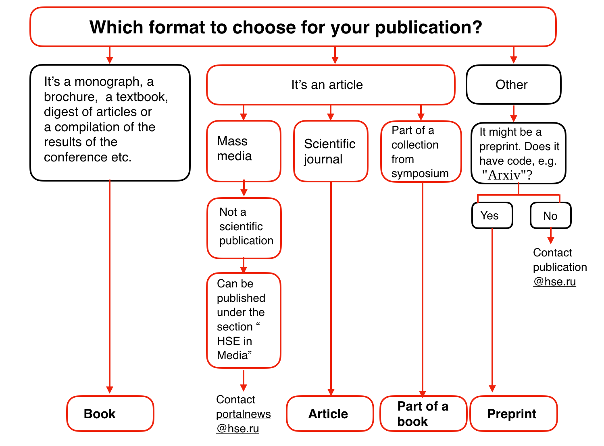
用机器学习的术语来说，可以把它看成一个简单的分类器，根据内容（书、小册子、论文）、新闻类型、原发表物类型（科学期刊、通讯）等来确定合适的发表类型（书、文章、书的章节、预印本、Higher School of Economics and the Media 稿件）。
决策树常常是专家经验的概括，是一种分享特定过程知识的方式。例如，在引入可扩展机器学习算法之前，银行业的信用评分任务是由专家解决的，能否放贷是基于一些直观（或经验）的规则，这些规则就可以表示为决策树的形式，如下图所示：
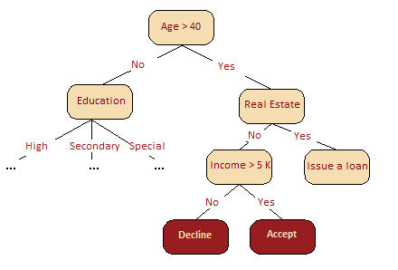
作为机器学习算法的决策树基本上和上图差不多，它合并一连串逻辑规则，使之成为一个树形的数据结构，这些规则的形式为「特征 a 的值小于 x，特征 b 的值小于 y … => 类别 1」。
下面，我们基于「年龄」、「房产」、「收入」、「教育」特征使用决策树解决一个二元分类问题，即「是否允许贷款」。
如何构建决策树
年龄、房产、收入、教育，这么多的特征首先应该关注哪个呢？
为了回答上述问题，先看一个简单的游戏，即「20 个问题」游戏，这个游戏是这样玩的：A 心里想着一个名人，B 问 A 20 个问题，A 只能回答「是」或「否」，20 个问题之后 B 要猜出 A 心里想的那个名人是谁。首先问一个可以最大程度压缩剩余选项数目的问题会使 B 占据极大优势，例如询问「是不是安吉丽娜·朱莉？」，最多剔除一个选项，而询问「这个名人是女人吗？」将消除大约一半的选项。就是说，「性别」特征相比「安吉丽娜·朱莉」、「西班牙人」、「喜欢足球」等其他特征更能区分名人数据集。这背后的道理与熵有关，下面介绍熵的概念。
熵
熵是一个在物理、信息论和其他领域中广泛应用的重要概念，可以衡量获得的信息量。对于具有 N 种可能状态的系统而言，熵的定义如下：
其中，𝑝𝑖 p i 是系统位于第 i 个状态的概率。熵可以描述为系统的混沌程度，熵越高，系统的有序性越差，反之亦然。熵将帮助我们高效的分割数据，类似帮助我们找出在「20 个问题」游戏中先问什么问题较好。
玩具示例
为了解释熵是如何有利于构建决策树模型的，让我们来看一个玩具示例，在这个示例中将基于球的位置预测它的颜色。
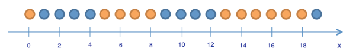
这里有 9 个蓝球和 11 个黄球。如果随机选择一个球，这个球是蓝球的概率 ，是黄球的概率 ，这意味着熵
这个值本身可能无法告诉我们很多信息。
将球分为「位置小于等于 12、位置大于 12」这两组，如下图所示。
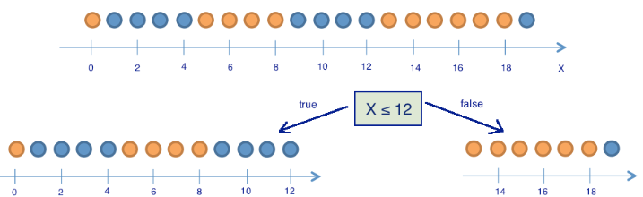
那么分组后，熵的变化如何？左边一组有 13 个球， 8 蓝 5 黄。这一组的熵
右边一组有 7 个球， 1 蓝 6 黄。右边这组的熵
可见，两组的熵都下降了，且右边这组降得更多。由于熵实际上是系统混沌（或不确定）的程度，熵的下降被称为信息增益。数学上，基于变量 Q（在这个例子中是变量「x ≤ 12」）所作的分割，得到的信息增益（IG）定义为：
其中，𝑞 q 是分割的组数，𝑁𝑖 N i 是变量 Q 等于第 i 项时的样本数目。在玩具示例中，有 2 个组（𝑞 = 2 q = 2），一组有 13 个元素（𝑁1 = 13 N 1 = 13），另一组有 7 个（𝑁2 = 7 N 2 = 7）。因此，信息增益为：
结果表明，根据「坐标小于或等于 12」将球分为两组带来了一个更有序的系统。让我们继续分组，直到每组中的球颜色都一样。
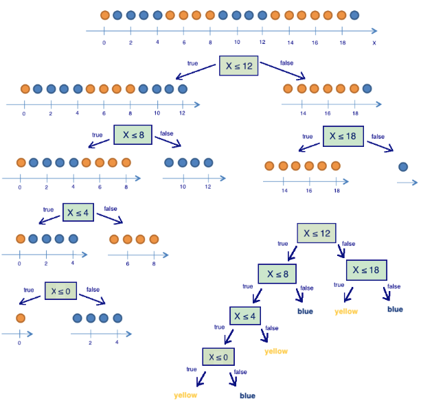
上图可见，右边那组只需根据「坐标小于或等于 18」再分割一次即可。而左边那组还需要三次分割。注意，若组内所有球的颜色都一样，那么这个组的熵为 0（）。
通过这个例子，我们成功构建了一个基于球的位置预测球颜色的决策树。但倘若我们再向里面增加一个球，这个决策树就可能无法很好地工作，因为它完全拟合了训练集（初始的 20 球）。如果希望提升它的泛用性，那么一棵具有更少分支（「问题」）的决策树将有更好的效果。
决策树构建算法
在之前的例子中构建的决策树是最优的：它只需提 5 个「问题」（基于变量 Q），就完全拟合了训练集。其他分割条件会使得到的树更深，即需要更多「问题」才能获得答案。
构建决策树的流行算法（如 ID3 或 C4.5）的核心，是贪婪最大化信息增益：在每一步，算法都会选择能在分割后给出最大信息增益的变量。接着递归重复这一流程，直到熵为零（或者，为了避免过拟合，直到熵为某个较小的值）。不同的算法使用不同的推断，通过「提前停止」或「截断」以避免构建出过拟合的树。
分类问题中其他的分割质量标准
上面我们讨论了熵是如何衡量树的分区的，但还有其他指标来衡量分割的好坏：
- 基尼不确定性（Gini uncertainty）：
- 错分率（Misclassification error）：
实践中几乎从不使用错分率，而基尼不确定性和信息增益的效果差不多。
二元分类问题的熵和基尼不确定性为：
其中 是对象具有标签 + 的概率。
以 为坐标，绘制上面两个函数的图像。
import warnings
from matplotlib import pyplot as plt
import numpy as np
import pandas as pd
import seaborn as sns
sns.set()
warnings.filterwarnings('ignore')
plt.figure(figsize=(6, 4))
xx = np.linspace(0, 1, 50)
plt.plot(xx, [2 * x * (1-x) for x in xx], label='gini')
plt.plot(xx, [4 * x * (1-x) for x in xx], label='2*gini')
plt.plot(xx, [-x * np.log2(x) - (1-x) * np.log2(1 - x)
for x in xx], label='entropy')
plt.plot(xx, [1 - max(x, 1-x) for x in xx], label='missclass')
plt.plot(xx, [2 - 2 * max(x, 1-x) for x in xx], label='2*missclass')
plt.xlabel('p+')
plt.ylabel('criterion')
plt.title('Criteria of quality as a function of p+ (binary classification)')
plt.legend()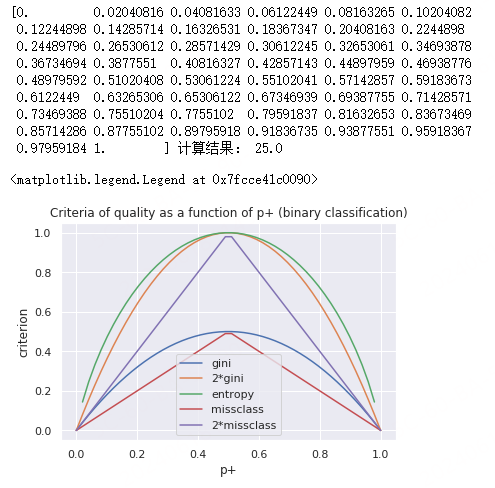
上图可见，熵的图像和两倍的基尼不确定性图像非常接近。因此，在实践中，这两个指标的效果基本上是一样的。
示例
下面用一棵决策树拟合一些合成数据。这些合成数据属于两个不同的类别，这两个类别的均值不同，但都呈现正态分布。
第一类
np.random.seed(17)
train_data = np.random.normal(size=(100, 2))
train_labels = np.zeros(100)
# 第二类
train_data = np.r_[train_data, np.random.normal(size=(100, 2), loc=2)]
train_labels = np.r_[train_labels, np.ones(100)]下面绘制数据。通俗地讲，这种情况下的分类问题就是构造一个「边界」，能够较好的分开两个类别（红点和黄点）。这个「边界」若是一条直线的话可能太过简单，若是沿着每个红点画出的蛇形曲线又太过复杂（这将导致其在新数据上的表现很差）。从直觉上说，某种平滑的边界，在新数据上的效果会比较好。
plt.figure(figsize=(10, 8))
plt.scatter(train_data[:, 0], train_data[:, 1], c=train_labels, s=100,
cmap='autumn', edgecolors='black', linewidth=1.5)
plt.plot(range(-2, 5), range(4, -3, -1))
下面训练一棵 sklearn 决策树，区分这两类数据点。最后可视化所得的边界。
from sklearn.tree import DecisionTreeClassifier
# 编写一个辅助函数，返回之后的可视化网格
def get_grid(data):
x_min, x_max = data[:, 0].min() - 1, data[:, 0].max() + 1
y_min, y_max = data[:, 1].min() - 1, data[:, 1].max() + 1
return np.meshgrid(np.arange(x_min, x_max, 0.01), np.arange(y_min, y_max, 0.01))
# max_depth 参数限制决策树的深度
clf_tree = DecisionTreeClassifier(criterion='entropy', max_depth=3,
random_state=17)
# 训练决策树
clf_tree.fit(train_data, train_labels)
# 可视化
xx, yy = get_grid(train_data)
predicted = clf_tree.predict(np.c_[xx.ravel(),
yy.ravel()]).reshape(xx.shape)
plt.pcolormesh(xx, yy, predicted, cmap='autumn')
plt.scatter(train_data[:, 0], train_data[:, 1], c=train_labels, s=100,
cmap='autumn', edgecolors='black', linewidth=1.5)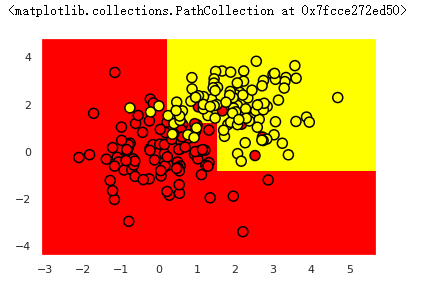
通过 pydotplus 和 export_graphviz 库我们可以方便的看到决策树本身是怎样的。使用 StringIO() 函数开辟一个缓存空间保存决策树，通过 export_graphviz() 函数以 DOT 格式导出决策树的 GraphViz 表示，然后将其写入 out_file 中。使用 graph_from_dot_data() 函数读入数据并通过 Image() 函数显示决策树。
!pip install pydotplus # 安装必要模块
from ipywidgets import Image
from io import StringIO
import pydotplus
from sklearn.tree import export_graphviz
dot_data = StringIO()
export_graphviz(clf_tree, feature_names=['x1', 'x2'],
out_file=dot_data, filled=True)
graph = pydotplus.graph_from_dot_data(dot_data.getvalue())
Image(value=graph.create_png())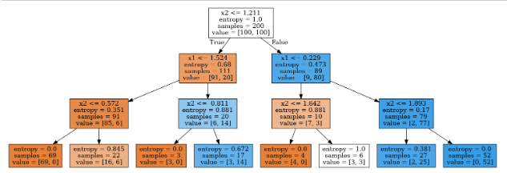
上图表明，在最深的一层，树将空间「切割」为 8 个矩形，也就是说，树有 8 个叶节点。在每个矩形之中，树将根据数量较多的对象的标签做出预测。
我们如何「读懂」这颗决策树？
上个示例中，总共有 200 个合成数据（样本），每个分类各有 100 个合成数据。初始状态的熵是最大的，即 𝑆 = 1 S = 1。接着，通过比较 𝑥2 x 2 与 1.211 的大小进行第一次分割，将样本分成两组（你可以在上图中找到这一部分边界）。基于这一次分割，左右两组的熵都下降了。这一过程持续进行，直到树的深度达到 3。在上图中，属于第一类的样本数量越多，该节点的橙色就越深，属于第二类的样本越多，该节点的蓝色就越深。若两类样本的数量相等，则为白色，比如根节点的两类样本数量相同，所以它是白色的
决策树如何应用到数值特征？
假设有一个数值特征「年龄」，该特征有大量的唯一值。决策树将通过查看「年龄 < 17」、「年龄 < 22.87」这样的二元属性寻找最好的分割，分割的好坏由某种信息增益标准衡量。但在构建树的每一步中，会有过多的二元属性可供选择，比如「薪水」同样能以很多方式进行分割，为了解决这一问题，我们经常使用启发式算法来限制选择的属性数量。
看一个例子，假设有如下数据集：
data = pd.DataFrame({'Age': [17, 64, 18, 20, 38, 49, 55, 25, 29, 31, 33],
'Loan Default': [1, 0, 1, 0, 1, 0, 0, 1, 1, 0, 1]})
data使用 sort_values() 方法根据年龄进行升序排列。
data.sort_values('Age')训练一个决策树模型，并可视化。
age_tree = DecisionTreeClassifier(random_state=17)
age_tree.fit(data['Age'].values.reshape(-1, 1), data['Loan Default'].values)
dot_data = StringIO()
export_graphviz(age_tree, feature_names=['Age'],
out_file=dot_data, filled=True)
graph = pydotplus.graph_from_dot_data(dot_data.getvalue())
Image(value=graph.create_png())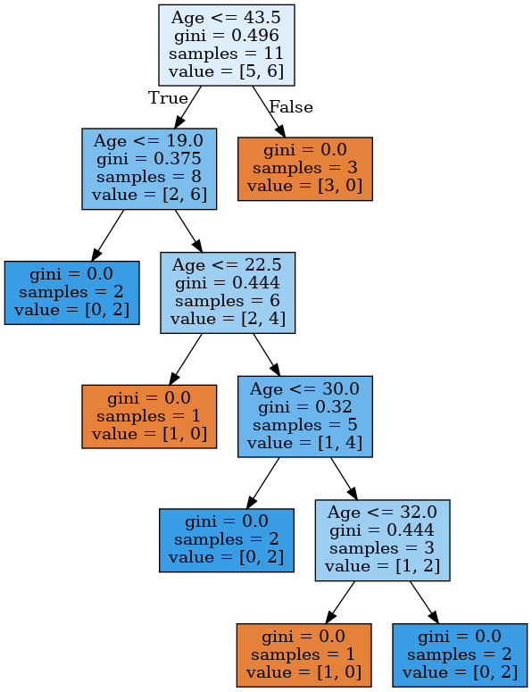
上图可见，该决策树使用以下 5 个值来评估年龄：43.5、19、22.5、30、32。如果你仔细观察，你会发现它们就是目标变量（Loan Default）出现变化（从 1「切换」到 0 或从 0「切换」到 1）时那两个年龄的平均值。比如，一个 38 岁的客户没能偿还贷款（目标变量为 1），而一个 49 岁的客户还贷了（目标变量为 0），那么树使用的评估值就是 38 和 49 的均值，即 43.5。树寻找那些目标变量发生变化的值，以此作为「切割」的阈值。
下面考虑一个更复杂的例子，把「薪水」变量（以千美元每年为单位）加入数据集。
data2 = pd.DataFrame({'Age': [17, 64, 18, 20, 38, 49, 55, 25, 29, 31, 33],
'Salary': [25, 80, 22, 36, 37, 59, 74, 70, 33, 102, 88],
'Loan Default': [1, 0, 1, 0, 1, 0, 0, 1, 1, 0, 1]})
data2.sort_values('Age')上表可见，如果根据年龄排序，目标变量（Loan Default）将切换（从 1 到 0 或从 0 到 1）5 次。
下表可见，如果根据薪水排序，它将切换 7 次。
data2.sort_values('Salary')下面看看树将如何选择特征。
age_sal_tree = DecisionTreeClassifier(random_state=17)
age_sal_tree.fit(data2'Age', 'Salary'.values, data2['Loan Default'].values)
dot_data = StringIO()
export_graphviz(age_sal_tree, feature_names=['Age', 'Salary'],
out_file=dot_data, filled=True)
graph = pydotplus.graph_from_dot_data(dot_data.getvalue())
Image(value=graph.create_png())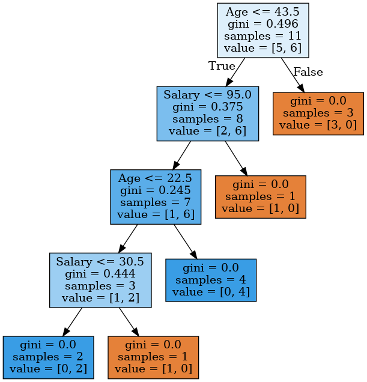
上图表明，树同时根据薪水和年龄进行分区，有些节点的分割阈值选择了年龄，有些选择了薪水。树为何选择这些特征？因为根据基尼不确定性质量标准，它们提供了更好的分区。
结论：决策树处理数值特征最简单的启发式算法是升序排列它的值，然后只关注目标变量发生改变的那些值。
此外，当数据集具有大量数值特征，且每个特征具有大量唯一值时，只选择最高的 N 个阈值，即，仅仅使用提供最高增益的前 N 个值。这一过程可以看成是构造了一棵深度为 1 的树，计算熵（或基尼不确定性），然后选择最佳阈值用于比较。比方说，如果我们根据「薪水 ≤ 34.5」分割，左子组的熵为 0（所有客户都是「不好的」），而右边的熵为 0.954（3 个「不好的」，5 个「好的」，你可以自行确认这一点，这将作为作业的一部分），信息增益大概是 0.3。如果我们根据「薪水 ≤ 95」分割，左边的子组的熵会是 0.97（6 个「不好的」，4 个「好的」），而右边的熵会是 0（该组只包含 1 个对象），信息增益大约是 0.11。如果以这样的方式计算每种分区的信息增益，那么在使用所有特征构造一棵大决策树之前就可以选出每个数值特征的阈值。
树的关键参数
理论上讲，我们可以构建一个决策树，直到每个叶节点只有一个实例，但这样做容易过拟合，导致其在新数据上的表现不佳。如果你这么做，在树的最深处，可能会存在由无关紧要的特征组成的分区，例如根据「客户裤子的颜色」这一特征进行分区，这是我们不希望发生。
但在两种情况下，树可以被构建到最大深度（每个叶节点只有一个实例）：
- 随机森林。它将构建为最大深度的单个树的响应进行平均（稍后我们将讨论为什么要这样做）。
- 决策树修剪。在这种方法中，树首先被构造成最大深度。然后，从底部开始，基于交叉验证来比较有分区/无分区情形下树的质量情况，进而移除树的一些节点。
下图是过拟合的决
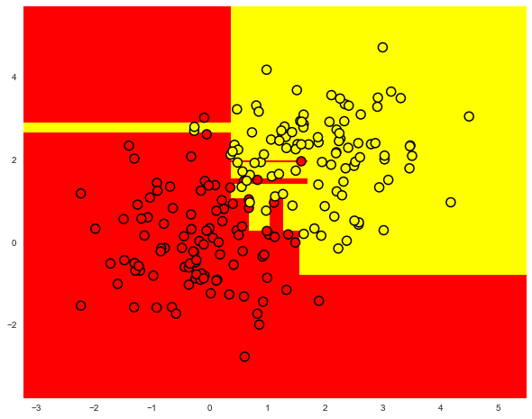
21275.png)常见的解决决策树过拟合的方法为：
- 人工限制深度或叶节点的最少样本数。
- 对树进行剪枝。
scikit-learn 的 DecisionTreeClassifier 类
sklearn.tree.DecisionTreeClassifier 类的主要参数为：
- max_depth 树的最大深度；
- max_features 搜索最佳分区时的最大特征数（特征很多时，设置这个参数很有必要，因为基于所有特征搜索分区会很「昂贵」）；
- min_samples_leaf 叶节点的最少样本数。
树的参数需要根据输入数据设定，通常通过交叉验证可以确定参数范围，下文会具体讨论交叉验证。
回归问题中的决策树
当对数值变量进行预测时，我们构造决策树的思路和分类问题时所用的思路是一样的，但衡量决策树好坏的质量标准改变了，现在它的质量标准如下：
其中，ℓℓ 是叶节点中的样本数，𝑦𝑖 y i 是目标变量的值。简单来说，通过最小化方差，使每个叶子中的目标特征的值大致相等，以此来划分训练集的特征。
示例
让我们基于以下函数生成一些带噪数据：
接着在生成的数据上训练一颗决策树，并进行预测，调用 plt 方法画出结果示意图。
from sklearn.tree import DecisionTreeRegressor
n_train = 150
n_test = 1000
noise = 0.1
def f(x):
x = x.ravel()
return np.exp(-x ** 2) + 1.5 * np.exp(-(x - 2) ** 2)
def generate(n_samples, noise):
X = np.random.rand(n_samples) * 10 - 5
X = np.sort(X).ravel()
y = np.exp(-X ** 2) + 1.5 * np.exp(-(X - 2) ** 2) + \
np.random.normal(0.0, noise, n_samples)
X = X.reshape((n_samples, 1))
return X, y
X_train, y_train = generate(n_samples=n_train, noise=noise)
X_test, y_test = generate(n_samples=n_test, noise=noise)
reg_tree = DecisionTreeRegressor(max_depth=5, random_state=17)
reg_tree.fit(X_train, y_train)
reg_tree_pred = reg_tree.predict(X_test)
plt.figure(figsize=(10, 6))
plt.plot(X_test, f(X_test), "b")
plt.scatter(X_train, y_train, c="b", s=20)
plt.plot(X_test, reg_tree_pred, "g", lw=2)
plt.xlim([-5, 5])
plt.title("Decision tree regressor, MSE = %.2f" %
(np.sum((y_test - reg_tree_pred) ** 2) / n_test))
plt.show()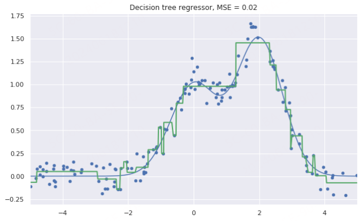
上图表明，决策树使用分段的常数函数逼近数据。
最近邻方法
最近邻方法（K 近邻或 k-NN）是另一个非常流行的分类方法。当然，也可以用于回归问题。和决策树类似，这是最容易理解的分类方法之一。这一方法遵循紧密性假说：如果样本间的距离能以足够好的方法衡量，那么相似的样本更可能属于同一分类。
比如，根据最近邻方法，下图中的绿球将被分类为「蓝色」而不是「红色」，因为它与蓝球的距离更近。

再举一个例子，如果你不知道蓝牙耳机属于什么类别，你可以查找 5 个相似的耳机，如果其中 4 个标记为「配件」类，只有 1 个标记为「科技」类，那么根据最近邻方法，它属于「配件」类。
在最近邻方法中，为了对测试集中的每个样本进行分类，需要依次进行以下操作：
- 计算训练集中每个样本之间的距离。
- 从训练集中选取 k 个距离最近的样本。
- 测试样本的类别将是它 k 个最近邻中最常见的分类。
在回归问题中应用最近邻方法很简单，仅需将上述步骤做一个小小的改动：第三步不返回分类，而是返回一个数字，即目标变量在邻居中的均值或中位数。
这一方式的显著特点是它具有惰性：当需要对测试样本进行分类时，计算只在预测阶段进行。由于这种特点，最近邻方法事先并不基于训练样本创建模型，这与上文提到的决策树不同。决策树是基于训练集构建的，在预测阶段仅通过遍历决策树就可以实现快速地分类。
最近邻方法的实际应用
- 在某些案例中，k-NN 可以作为一个模型的基线。
- 在 Kaggle 竞赛中，k-NN 常常用于构建元特征（即 k-NN 的预测结果作为其他模型的输入），或用于堆叠/混合。
- 最近邻方法还可以扩展到推荐系统等任务中。
- 在大型数据集上，常常使用逼近方法搜索最近邻。
k-NN 分类/回归的效果取决于一些参数：
- 邻居数 k。
- 样本之间的距离度量（常见的包括 Hamming，欧几里得，余弦和 Minkowski 距离）。注意，大部分距离要求数据在同一尺度下，例如「薪水」特征的数值在千级，「年龄」特征的数值却在百级，如果直接将他们丢进最近邻模型中，「年龄」特征就会受到比较大的影响。
- 邻居的权重（每个邻居可能贡献不同的权重，例如，样本越远，权重越低）。
scikit-learn 的 KNeighborsClassifier 类
sklearn.neighbors.KNeighborsClassifier 类的主要参数为：
- weights：可设为 uniform（所有权重相等），distance（权重和到测试样本的距离成反比），或任何其他用户自定义的函数。
- algorithm（可选）：可设为 brute、ball_tree、KD_tree、auto。若设为 brute，通过训练集上的网格搜索来计算每个测试样本的最近邻；若设为 ball_tree 或 KD_tree，样本间的距离储存在树中，以加速寻找最近邻；若设为 auto，将基于训练集自动选择合适的寻找最近邻的方法。
- leaf_size（可选）：若寻找最近邻的算法是 BallTree 或 KDTree，则切换为网格搜索所用的阈值。
- metric：可设为 minkowski、manhattan、euclidean、chebyshev 或其他。
选择模型参数和交叉验证
机器学习算法的主要任务是可以「泛化」未曾见过的数据。由于我们无法立刻得知模型在新数据上的表现（因为还不知道目标变量的真值），因此有必要牺牲一小部分数据，来验证模型的质量，即将一小部分数据作为留置集。
通常采用下述两种方法之一来验证模型的质量：
- 留置法。保留一小部分数据（一般是 20% 到 40%）作为留置集，在其余数据上训练模型（原数据集的 60%-80%），然后在留置集上验证模型的质量。
- 交叉验证。最常见的情形是 k 折交叉验证，如下图所示。

在 k 折交叉验证中，模型在原数据集的 𝐾−1 K −1 个子集上进行训练（上图白色部分），然后在剩下的 1 个子集上验证表现，重复训练和验证的过程，每次使用不同的子集（上图橙色部分），总共进行 K 次，由此得到 K 个模型质量评估指数，通常用这些评估指数的求和平均数来衡量分类/回归模型的总体质量。
相比留置法，交叉验证能更好地评估模型在新数据上的表现。然而，当你有大量数据时，交叉验证对机器计算能力的要求会变得很高。
交叉验证是机器学习中非常重要的技术，同时也应用于统计学和经济学领域。它有助于我们进行超参数调优、模型比较、特征评估等其他重要操作。你可以点击 这里 以了解更多关于交叉验证的信息 。
应用样例
在客户离网率预测任务中使用决策树和最近邻方法
首先读取数据至 DataFrame 并进行预处理。将 State 特征从 DateFrame 转移到单独的 Series 对象中。我们训练的第一个模型将不包括 State 特征，之后再考察 State 特征是否有用。
df = pd.read_csv(
'https://labfile.oss.aliyuncs.com/courses/1283/telecom_churn.csv')
df['International plan'] = pd.factorize(df['International plan'])[0]
df['Voice mail plan'] = pd.factorize(df['Voice mail plan'])[0]
df['Churn'] = df['Churn'].astype('int')
states = df['State']
y = df['Churn']
df.drop(['State', 'Churn'], axis=1, inplace=True)
df.head()之后将数据集的 70% 划分为训练集（X_train, y_train），30% 划分为留置集（X_holdout, y_holdout）。留置集的数据在调优模型参数时不会被用到，在调优之后，用它评定所得模型的质量。
接下来，训练 2 个模型：决策树和 k-NN。一开始，我们并不知道如何设置模型参数能使模型表现好，所以可以使用随机参数方法，假定树深（max_dept）为 5，近邻数量（n_neighbors）为 10。
from sklearn.model_selection import train_test_split, StratifiedKFold
from sklearn.neighbors import KNeighborsClassifier
X_train, X_holdout, y_train, y_holdout = train_test_split(df.values, y, test_size=0.3,
random_state=17)
tree = DecisionTreeClassifier(max_depth=5, random_state=17)
knn = KNeighborsClassifier(n_neighbors=10)
tree.fit(X_train, y_train)
knn.fit(X_train, y_train)使用准确率（Accuracy）在留置集上评价模型预测的质量。
from sklearn.metrics import accuracy_score
tree_pred = tree.predict(X_holdout)
accuracy_score(y_holdout, tree_pred)
knn_pred = knn.predict(X_holdout)
accuracy_score(y_holdout, knn_pred)从上可知，决策树的准确率约为 94%，k-NN 的准确率约为 88%，于是仅使用我们假定的随机参数（即没有调参），决策树的表现更好。
现在，使用交叉验证确定树的参数，对每次分割的 max_dept（最大深度 h）和 max_features（最大特征数）进行调优。GridSearchCV() 函数可以非常简单的实现交叉验证，下面程序对每一对 max_depth 和 max_features 的值使用 5 折验证计算模型的表现，接着选择参数的最佳组合。
from sklearn.model_selection import GridSearchCV, cross_val_score
tree_params = {'max_depth': range(5, 7),
'max_features': range(16, 18)}
tree_grid = GridSearchCV(tree, tree_params,
cv=5, n_jobs=-1, verbose=True)
tree_grid.fit(X_train, y_train)列出交叉验证得出的最佳参数和相应的训练集准确率均值。
tree_grid.best_params_
tree_grid.best_score_
accuracy_score(y_holdout, tree_grid.predict(X_holdout))绘制所得的决策树。
dot_data = StringIO()
export_graphviz(tree_grid.best_estimator_, feature_names=df.columns,
out_file=dot_data, filled=True)
graph = pydotplus.graph_from_dot_data(dot_data.getvalue())
Image(value=graph.create_png())
现在，再次使用交叉验证对 k-NN 的 k 值（即邻居数）进行调优。
from sklearn.pipeline import Pipeline
from sklearn.preprocessing import StandardScaler
knn_pipe = Pipeline([('scaler', StandardScaler()),
('knn', KNeighborsClassifier(n_jobs=-1))])
knn_params = {'knn__n_neighbors': range(6, 8)}
knn_grid = GridSearchCV(knn_pipe, knn_params,
cv=5, n_jobs=-1,
verbose=True)
knn_grid.fit(X_train, y_train)
knn_grid.best_params_, knn_grid.best_score_
knn_grid.best_params_
accuracy_score(y_holdout, knn_grid.predict(X_holdout))从上可知，在 1-9 范围（range 不包括 10）内最优的 k 值为 7，其交叉验证的准确率约为 88.5%，调优后 k-NN 在留置集上的准确率约为 89%。
综上所述，在这个任务里，决策树有着 94%/94.6%（留置法/交叉验证调优后）的准确率，k-NN 有着 88%/89%（留置法/交叉验证调优后）的准确率，显然决策树的表现更好。
使用 RandomForestClassifier() 方法再训练一个随机森林（可以把它想象成一群互相协作的决策树），看看能否在这个任务上有更好的表现。
from sklearn.ensemble import RandomForestClassifier
forest = RandomForestClassifier(n_estimators=100, n_jobs=-1,
random_state=17)
np.mean(cross_val_score(forest, X_train, y_train, cv=5))
forest_params = {'max_depth': range(8, 10),
'max_features': range(5, 7)}
forest_grid = GridSearchCV(forest, forest_params,
cv=5, n_jobs=-1, verbose=True)
forest_grid.fit(X_train, y_train)
forest_grid.best_params_, forest_grid.best_score_
accuracy_score(y_holdout, forest_grid.predict(X_holdout))从上可知，随机森林有着 95.3% 的准确率。不得不说，决策树在这个任务上的表现非常好，即使是训练时间长得多的随机森林也无法取得比它更好的表现。
决策树的复杂情况
为了继续讨论决策树和 k-NN 的优劣，让我们考虑另外一个简单的分类任务，在这个任务中决策树的表现不错但得到的分类边界过于复杂。
首先，在一个平面上创建一组具有 2 个分类的数据点，每个数据点是两个分类中的一个（红色表示 𝑥1 > 𝑥2 x 1 > x 2，黄色表示 𝑥1 < 𝑥2 x 1 < x 2），其实用一条直线 𝑥1 = 𝑥2 x 1 = x 2 就可以完成它们的分类，那么决策树会这么做吗？
def form_linearly_separable_data(n=500, x1_min=0, x1_max=30,
x2_min=0, x2_max=30):
data, target = [], []
for i in range(n):
x1 = np.random.randint(x1_min, x1_max)
x2 = np.random.randint(x2_min, x2_max)
if np.abs(x1 - x2) > 0.5:
data.append([x1, x2])
target.append(np.sign(x1 - x2))
return np.array(data), np.array(target)
X, y = form_linearly_separable_data()
plt.scatter(X[:, 0], X[:, 1], c=y, cmap='autumn', edgecolors='black')
训练一个决策树对上面的数据进行分类，并绘制分类边界。
tree = DecisionTreeClassifier(random_state=17).fit(X, y)
xx, yy = get_grid(X)
predicted = tree.predict(np.c_[xx.ravel(), yy.ravel()]).reshape(xx.shape)
plt.pcolormesh(xx, yy, predicted, cmap='autumn')
plt.scatter(X[:, 0], X[:, 1], c=y, s=100,
cmap='autumn', edgecolors='black', linewidth=1.5)
plt.title('Easy task. Decision tree compexifies everything')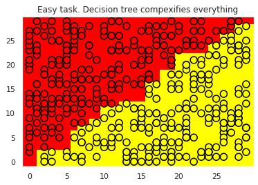
可视化决策树。
dot_data = StringIO()
export_graphviz(tree, feature_names=['x1', 'x2'],
out_file=dot_data, filled=True)
graph = pydotplus.graph_from_dot_data(dot_data.getvalue())
Image(value=graph.create_png())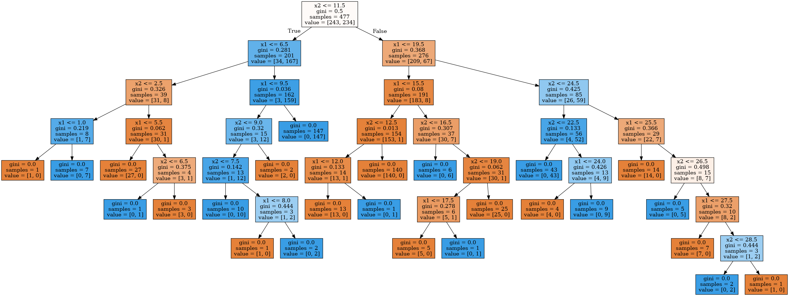
从上可知，决策树构建的边界过于复杂，而且树的深度过深，产生了过拟合现象。
再训练一个 k-NN 模型，看看它在这个任务上的表现情况。该单元格执行时间较长，建议在线下练习：
knn = KNeighborsClassifier(n_neighbors=1).fit(X, y)
xx, yy = get_grid(X)
predicted = knn.predict(np.c_[xx.ravel(), yy.ravel()]).reshape(xx.shape)
plt.pcolormesh(xx, yy, predicted, cmap='autumn')
plt.scatter(X[:, 0], X[:, 1], c=y, s=100,
cmap='autumn', edgecolors='black', linewidth=1.5)
plt.title('Easy task, kNN. Not bad')
从上可知，最近邻方法的表现比决策树好一点，但仍然比不上线性分类器 𝑥1 = 𝑥2 x 1 = x 2（线性分类器将是下一个实验的内容）。
在 MNIST 手写数字识别任务中应用决策树和 k-NN
现在可以看看这两个算法应用到实际任务上的表现如何，首先载入 sklearn 内置的 MNIST 手写数字数据集，该数据库中手写数字的图片为 8x8 的矩阵，矩阵中的值表示每个像素的白色亮度。
from sklearn.datasets import load_digits
data = load_digits()
X, y = data.data, data.target
X[0, :].reshape([8, 8])绘制一些 MNIST 手写数字。
f, axes = plt.subplots(1, 4, sharey=True, figsize=(16, 6))
for i in range(4):
axes[i].imshow(X[i, :].reshape([8, 8]), cmap='Greys')使用 train_test_split() 方法分割数据集，其中的 70% 作为训练集（X_train，y_train），30% 作为留置集（X_holdout，y_holdout）。
X_train, X_holdout, y_train, y_holdout = train_test_split(
X, y, test_size=0.3, random_state=17)使用随机参数训练决策树和 k-NN。
tree = DecisionTreeClassifier(max_depth=5, random_state=17)
knn_pipe = Pipeline([('scaler', StandardScaler()),
('knn', KNeighborsClassifier(n_neighbors=10))])
tree.fit(X_train, y_train)
knn_pipe.fit(X_train, y_train)训练好之后，分别在留置集上做出预测。
tree_pred = tree.predict(X_holdout)
knn_pred = knn_pipe.predict(X_holdout)
accuracy_score(y_holdout, knn_pred), accuracy_score(
y_holdout, tree_pred) # (0.976, 0.666)从上可知，k-NN 做得更好，不过别忘了我们用的是随机参数。现在，使用交叉验证调优决策树模型，因为这次任务所需考虑的特征比之前任务中的更多，所以可以增加参数的大小。
tree_params = {'max_depth': [10, 20, 30],
'max_features': [30, 50, 64]}
tree_grid = GridSearchCV(tree, tree_params,
cv=5, n_jobs=-1, verbose=True)
tree_grid.fit(X_train, y_train)查看交叉验证得到的最佳参数组合和相应的准确率。
tree_grid.best_params_, tree_grid.best_score_调优后决策树模型的准确率达到了 84.4%，但还不到使用随机参数的 k-NN 的准确率（97%）。现在，使用交叉验证调优 k-NN 模型。
np.mean(cross_val_score(KNeighborsClassifier(
n_neighbors=1), X_train, y_train, cv=5))从上可知，调优后的 k-NN 在这一数据集上可以达到 98.7% 的准确率。
下面在这一数据集上训练随机森林模型，在大多数数据集上，它的效果比 k-NN 要好。
np.mean(cross_val_score(RandomForestClassifier(
random_state=17), X_train, y_train, cv=5))从上可知，在这个数据集中随机森林的准确率（93.5%）不如 k-NN（98.7%）。当然，我们没有对随机森林的参数进行任何调优，但即使经过调优，训练精确度也无法超过 k-NN。
决策树、k-NN、随机森林在这个数据集上的准确率如下所示：
| 算法\方式 | 留置法 | 交叉验证 |
|---|---|---|
| 决策树 | 0.667 | 0.844 |
| k-NN | 0.976 | 0.987 |
| 随机森林 | / | 0.934 |
从这个任务中得到的结论（同时也是一个通用的建议）：首先查看简单模型（决策树、最近邻）在你的数据上的表现，因为可能仅使用简单模型就已经表现得足够好了。
最近邻方法的复杂情形
下面考虑另一种情况，即在一个分类问题中，某个特征直接和目标变量成比例的情况。
def form_noisy_data(n_obj=1000, n_feat=100, random_seed=17):
np.seed = random_seed
y = np.random.choice([-1, 1], size=n_obj)
# 第一个特征与目标成比例
x1 = 0.3 * y
# 其他特征为噪声
x_other = np.random.random(size=[n_obj, n_feat - 1])
return np.hstack([x1.reshape([n_obj, 1]), x_other]), y
X, y = form_noisy_data()使用最近邻方法训练模型后，查看交叉验证和留置集的准确率，并绘制这两个准确率随 n_neighbors 最近邻数目 参数变化的曲线，这样的曲线被称为验证曲线。
from sklearn.model_selection import cross_val_score
X_train, X_holdout, y_train, y_holdout = train_test_split(
X, y, test_size=0.3, random_state=17)
cv_scores, holdout_scores = [], []
n_neighb = [1, 2, 3, 5] + list(range(50, 550, 50))
for k in n_neighb:
knn_pipe = Pipeline([('scaler', StandardScaler()),
('knn', KNeighborsClassifier(n_neighbors=k))])
cv_scores.append(np.mean(cross_val_score(
knn_pipe, X_train, y_train, cv=5)))
knn_pipe.fit(X_train, y_train)
holdout_scores.append(accuracy_score(
y_holdout, knn_pipe.predict(X_holdout)))
plt.plot(n_neighb, cv_scores, label='CV')
plt.plot(n_neighb, holdout_scores, label='holdout')
plt.title('Easy task. kNN fails')
plt.legend()
上图表明，即使我们尝试在较广范围内改变 n_neighbors 参数，基于欧几里得距离的 k-NN 在这个问题上依旧表现不佳。
下面用决策树训练一个模型，看看它在这个任务上的表现如何。
tree = DecisionTreeClassifier(random_state=17, max_depth=1)
tree_cv_score = np.mean(cross_val_score(tree, X_train, y_train, cv=5))
tree.fit(X_train, y_train)
tree_holdout_score = accuracy_score(y_holdout, tree.predict(X_holdout))
print('Decision tree. CV: {}, holdout: {}'.format(
tree_cv_score, tree_holdout_score))在这一任务中，决策树完美地解决了问题，在交叉验证和留置集上都得到了 100% 的准确率。其实，k-NN 之所以在这个任务上表现不佳并非该方法本身的问题，而是因为使用了欧几里得距离，因为欧几里得距离没能察觉出有一个特征（成比例）比其他所有特征（噪声）更重要。
决策树和最近邻方法的优势和劣势
决策树
优势：
- 生成容易理解的分类规则，这一属性称为模型的可解释性。例如它生成的规则可能是「如果年龄不满 25 岁，并对摩托车感兴趣，那么就拒绝发放贷款」。
- 很容易可视化，即模型本身（树）和特定测试对象的预测（穿过树的路径）可以「被解释」。
- 训练和预测的速度快。
- 较少的参数数目。
- 支持数值和类别特征。
劣势：
- 决策树对输入数据中的噪声非常敏感，这削弱了模型的可解释性。
- 决策树构建的边界有其局限性：它由垂直于其中一个坐标轴的超平面组成，在实践中比其他方法的效果要差。
- 我们需要通过剪枝、设定叶节点的最小样本数、设定树的最大深度等方法避免过拟合。
- 不稳定性，数据的细微变动都会显著改变决策树。这一问题可通过决策树集成方法来处理（以后的实验会介绍）。
- 搜索最佳决策树是一个「NP 完全」（NP-Complete）问题。了解什么是 NP-Complete 请点击 这里。实践中使用的一些推断方法，比如基于最大信息增益进行贪婪搜索，并不能保证找到全局最优决策树。
- 倘若数据中出现缺失值，将难以创建决策树模型。Friedman 的 CART 算法中大约 50% 的代码是为了处理数据中的缺失值（现在 sklearn 实现了这一算法的改进版本）。
- 这一模型只能内插，不能外推（随机森林和树提升方法也是如此）。也就是说，倘若你预测的对象在训练集所设置的特征空间之外，那么决策树就只能做出常数预测。比如，在我们的黄球和蓝球的例子中，这意味着模型将对所有位于 > 19 或 < 0 的球做出同样的预测。
最近邻方法
优势：
- 实现简单。
- 研究很充分。
- 通常而言，在分类、回归、推荐问题中第一个值得尝试的方法就是最近邻方法。
- 通过选择恰当的衡量标准或核，它可以适应某一特定问题。
劣势：
- 和其他复合算法相比，这一方法速度较快。但是，现实生活中，用于分类的邻居数目通常较大（100-150），在这一情形下，k-NN 不如决策树快。
- 如果数据集有很多变量，很难找到合适的权重，也很难判定哪些特征对分类/回归不重要。
- 依赖于对象之间的距离度量，默认选项欧几里得距离常常是不合理的。你可以通过网格搜索参数得到良好的解，但在大型数据集上的耗时很长。
- 没有理论来指导我们如何选择邻居数，故而只能进行网格搜索（尽管基本上所有的模型，在对其超参数进行调整时都使用网格搜索的方法）。在邻居数较小的情形下，该方法对离散值很敏感，也就是说，有过拟合的倾向。
- 由于「维度的诅咒」，当数据集存在很多特征时它的表现不佳。
实验总结
本次实验我们通过决策树和最近邻方法在几个简单示例上构建了分类模型，并基于交叉验证的方法对模型进行调优，之后对比了决策树和最近邻方法的优劣情况。这两种方法常常作为机器学习模型的基线，熟悉他们的用法是十分必要的。
相关链接
线性回归和线性分类器
介绍
本次实验简述了最小二乘法、最大似然估计、逻辑回归、正则化、验证和学习曲线的基本概念，搭建了基于逻辑回归的线性模型并进行正则化，通过分析 IBMD 数据集的二元分类问题和一个 XOR 问题阐述逻辑回归的优缺点。
知识点
- 回归
- 线性分类
- 逻辑回归的正则化
- 逻辑回归的优缺点
- 验证和学习曲线
最小二乘法
在开始学习线性模型之前，简要介绍一下线性回归，首先指定一个模型将因变量 𝑦 y 和特征联系起来，对线性模型而言，依赖函数的形式如下：
𝑦 = 𝑤0+∑𝑖 = 1𝑚𝑤𝑖𝑥𝑖 y = w 0+i = 1∑ m w i x i
如果为每项观测加上一个虚维度 𝑥0 = 1 x 0 = 1（比如偏置），那么就可以把 𝑤0 w 0 整合进求和项中，改写为一个略微紧凑的形式：
𝑦 = ∑𝑖 = 0𝑚𝑤𝑖𝑥𝑖 = wTx y = i = 0∑ m w i x i = w T x
如果有一个特征观测矩阵，其中矩阵的行是数据集中的观测，那么需要在左边加上一列。由此，线性模型可以定义为：
其中：
- ：因变量（目标变量）。
- ：模型的参数向量（在机器学习中，这些参数经常被称为权重）。
- ：观测及其特征矩阵，大小为 n 行、m+1 列（包括左侧的虚列），其秩的大小为 。
- ：一个变量，用来表示随机、不可预测模型的错误。
上述表达式亦可这样写：
模型具有如下限制（否则它就不是线性回归了）：
- 随机误差的期望为零：;
- 随机误差具有相同的有限方差，这一性质称为等分散性：;
- 随机误差不相关：.
权重 的估计 满足如下条件时，称其为线性：
其中对于 ， 仅依赖于 中的样本。由于寻求最佳权重的解是一个线性估计，这一模型被称为线性回归。
再引入一项定义：当期望值等于估计参数的真实值时，权重估计被称为无偏（unbiased）：
计算这些权重的方法之一是普通最小二乘法（OLS）。OLS 可以最小化因变量实际值和模型给出的预测值之间的均方误差：
为了解决这一优化问题，需要计算模型参数的导数。将导数设为零，然后求解关于 w w 的等式，倘若不熟悉矩阵求导，可以参考下面的 4 个式子：
\frac{\partial}{\partial \textbf{X}} \textbf{X}^{\text{T}} \textbf{A} &=& \textbf{A} \end{array}$$ $$\begin{array}{rcl} \frac{\partial}{\partial \textbf{X}} \textbf{X}^{\text{T}} \textbf{A} \textbf{X} &=& \left(\textbf{A} + \textbf{A}^{\text{T}}\right)\textbf{X} \end{array}$$ $$\begin{array}{rcl}\frac{\partial}{\partial \textbf{A}} \textbf{X}^{\text{T}} \textbf{A} \textbf{y} &=& \textbf{X}^{\text{T}} \textbf{y} \end{array}$$ $$\begin{array}{rcl} \frac{\partial}{\partial \textbf{X}} \textbf{A}^{-1} &=& -\textbf{A}^{-1} \frac{\partial \textbf{A}}{\partial \textbf{X}} \textbf{A}^{-1} \end{array}$$ 现在开始计算模型参数的导数： $$ \begin{array}{rcl} \frac{\partial \mathcal{L}}{\partial \textbf{w}} &=& \frac{\partial}{\partial \textbf{w}} \frac{1}{2n} \left( \textbf{y}^{\text{T}} \textbf{y} -2\textbf{y}^{\text{T}} \textbf{X} \textbf{w} + \textbf{w}^{\text{T}} \textbf{X}^{\text{T}} \textbf{X} \textbf{w}\right) \ &=& \frac{1}{2n} \left(-2 \textbf{X}^{\text{T}} \textbf{y} + 2\textbf{X}^{\text{T}} \textbf{X} \textbf{w}\right) \end{array}$$ $$ \begin{array}{rcl} \frac{\partial \mathcal{L}}{\partial \textbf{w}} = 0 &\Leftrightarrow& \frac{1}{2n} \left(-2 \textbf{X}^{\text{T}} \textbf{y} + 2\textbf{X}^{\text{T}} \textbf{X} \textbf{w}\right) = 0 \ &\Leftrightarrow& -\textbf{X}^{\text{T}} \textbf{y} + \textbf{X}^{\text{T}} \textbf{X} \textbf{w} = 0 \ &\Leftrightarrow& \textbf{X}^{\text{T}} \textbf{X} \textbf{w} = \textbf{X}^{\text{T}} \textbf{y} \ &\Leftrightarrow& \textbf{w} = \left(\textbf{X}^{\text{T}} \textbf{X}\right)^{-1} \textbf{X}^{\text{T}} \textbf{y} \end{array}$$ 基于上述的定义和条件，可以说，根据高斯-马尔可夫定理，模型参数的 OLS 估计是所有线性无偏估计中最优的，即通过 OLS 估计可以获得最低的方差。 有人可能会问，为何选择最小化均方误差而不是其他指标？因为若不选择最小化均方误差，那么就不满足高斯-马尔可夫定理的条件，得到的估计将不再是最佳的线性无偏估计。 最大似然估计是解决线性回归问题一种常用方法，下面介绍它的概念。 ### 最大似然估计 首先举一个简单的例子，我们想做一个试验判定人们是否记得简单的甲醇化学式 𝐶𝐻3𝑂𝐻 *C* *H* 3 *O* *H*。首先调查了 400 人，发现只有 117 个人记得甲醇的化学式。那么，直接将 117400≈29400117≈29 作为估计下一个受访者知道甲醇化学式的概率是较为合理的。这个直观的估计就是一个最大似然估计。为什么会这么估计呢？回忆下伯努利分布的定义：如果一个随机变量只有两个值（1 和 0，相应的概率为 𝜃 *θ* 和 1−𝜃1− *θ*），那么该随机变量满足伯努利分布，遵循以下概率分布函数： $$ p\left(\theta, x\right) = \theta^x \left(1 - \theta\right)^\left(1 - x\right), x \in \left\{0, 1\right\}$$ 这一分布正是我们所需要的，分布参数 𝜃 *θ* 就是「某个人知道甲醇化学式」的概率估计。在 400 个独立试验中，试验的结果记为 $\textbf{x} = \left(x_1, x_2, \ldots, x_{400}\right)$。写下数据的似然，即观测的可能性，比如正好观测到 117 个随机变量 𝑥 = 1 *x* = 1 和 283 个随机变量 𝑥 = 0 *x* = 0 的可能性： $$ p(\textbf{x}; \theta) = \prod_{i=1}^{400} \theta^{x_i} \left(1 - \theta\right)^{\left(1 - x_i\right)} = \theta^{117} \left(1 - \theta\right)^{283}$$ 接着，将最大化这一 $\theta$ 的表达式。一般而言，为了简化计算，并不最大化似然 $p(\textbf{x}; \theta)$，转而最大化其对数（这种变换不影响最终答案）： $$ \log p(\textbf{x}; \theta) = \log \prod_{i=1}^{400} \theta^{x_i} \left(1 - \theta\right)^{\left(1 - x_i\right)} = $$ $$ = \log \theta^{117} \left(1 - \theta\right)^{283} = 117 \log \theta + 283 \log \left(1 - \theta\right)$$ 为了找到最大化上式的 𝜃 *θ* 值，将上式对 𝜃 *θ* 求导，并令其为零，求解所得等式： $$ \frac{\partial \log p(\textbf{x}; \theta)}{\partial \theta} = \frac{\partial}{\partial \theta} \left(117 \log \theta + 283 \log \left(1 - \theta\right)\right) = \frac{117}{\theta} - \frac{283}{1 - \theta};$$ 由上可知，我们的直观估计正好是最大似然估计。现在将这一推理过程应用到线性回归问题上，尝试找出均方误差背后的道理。为此，需要从概率论的角度来看线性回归。我们的模型和之前是一样的： $$ \textbf y = \textbf X \textbf w + \epsilon$$ 不过，现在假定随机误差符合均值为零的 [ *正态分布*](https://baike.baidu.com/item/正态分布/829892?fr=aladdin)： $$ \epsilon_i \sim \mathcal{N}\left(0, \sigma^2\right)$$ 据此改写模型： $$ \begin{array}{rcl} y_i &=& \sum_{j=1}^m w_j X_{ij} + \epsilon_i \ &\sim& \sum_{j=1}^m w_j X_{ij} + \mathcal{N}\left(0, \sigma^2\right) \ p\left(y_i \mid \textbf X; \textbf{w}\right) &=& \mathcal{N}\left(\sum_{j=1}^m w_j X_{ij}, \sigma^2\right) \end{array}$$ 由于样本是独立抽取的（误差不相关是高斯-马尔可夫定理的条件之一），数据的似然看起来会是密度函数 𝑝(𝑦𝑖)*p*(*y* *i*) 的积。转化为对数形式： $$ \begin{array}{rcl} \log p\left(\textbf{y}\mid \textbf X; \textbf{w}\right) &=& \log \prod_{i=1}^n \mathcal{N}\left(\sum_{j=1}^m w_j X_{ij}, \sigma^2\right) \ &=& \sum_{i=1}^n \log \mathcal{N}\left(\sum_{j=1}^m w_j X_{ij}, \sigma^2\right) \ &=& -\frac{n}{2}\log 2\pi\sigma^2 -\frac{1}{2\sigma^2} \sum_{i=1}^n \left(y_i - \textbf{w}^\text{T} \textbf{x}_i\right)^2 \end{array}$$ 想要找到最大似然假设，即需要最大化表达式 𝑝(y∣X; w)*p*(**y** ∣ **X**; **w**) 以得到 wML **w** ML，这和最大化其对数是一回事。注意，当针对某个参数最大化函数时，可以丢弃所有不依赖这一参数的变量： $$ \begin{array}{rcl} \textbf{w}_{\text{ML}} &=& \arg \max_{\textbf w} p\left(\textbf{y}\mid \textbf X; \textbf{w}\right) = \arg \max_{\textbf w} \log p\left(\textbf{y}\mid \textbf X; \textbf{w}\right)\\ &=& \arg \max_{\textbf w} -\frac{n}{2}\log 2\pi\sigma^2 -\frac{1}{2\sigma^2} \sum_{i = 1}^n \left(y_i - \textbf{w}^{\text{T}} \textbf{x}_i\right)^2 \\ &=& \arg \max_{\textbf w} -\frac{1}{2\sigma^2} \sum_{i = 1}^n \left(y_i - \textbf{w}^{\text{T}} \textbf{x}_i\right)^2 \\ &=& \arg \min_{\textbf w} \mathcal{L}\left(\textbf X, \textbf{y}, \textbf{w} \right) \end{array}$$ 所以，当测量误差服从正态（高斯）分布的情况下， 最小二乘法等价于极大似然估计。 ### 偏置-方差分解 下面讨论线性回归预测的误差性质（可以推广到机器学习算法上），上文提到： - 目标变量的真值 $y$ 是确定性函数 $f\left(\textbf{x}\right)$ 和随机误差 $\epsilon$ 之和：$y = f\left(\textbf{x}\right) + \epsilon$。 - 误差符合均值为零、方差一致的正态分布：$\epsilon \sim \mathcal{N}\left(0, \sigma^2\right)$。 - 目标变量的真值亦为正态分布：$y \sim \mathcal{N}\left(f\left(\textbf{x}\right), \sigma^2\right)$。 - 试图使用一个协变量线性函数逼近一个未知的确定性函数 $f\left(\textbf{x}\right)$，这一协变量线性函数是函数空间中估计函数 $f$ 的一点，即均值和方差的随机变量。 因此，点 x **x** 的误差可分解为： $$ \begin{array}{rcl} \text{Err}\left(\textbf{x}\right) &=& \mathbb{E}\left[\left(y - \widehat{f}\left(\textbf{x}\right)\right)^2\right] \ &=& \mathbb{E}\left[y^2\right] + \mathbb{E}\left[\left(\widehat{f}\left(\textbf{x}\right)\right)^2\right] - 2\mathbb{E}\left[y\widehat{f}\left(\textbf{x}\right)\right] \ &=& \mathbb{E}\left[y^2\right] + \mathbb{E}\left[\widehat{f}^2\right] - 2\mathbb{E}\left[y\widehat{f}\right] \ \end{array}$$ 为了简洁，省略函数的参数，分别考虑每个变量。根据公式 Var(𝑧)= 𝐸 [𝑧2] −𝐸 [𝑧] 2Var(*z*)= E [*z* 2] −E [*z*] 2 可以分解前两项为： $$ \begin{array}{rcl} \mathbb{E}\left[y^2\right] &=& \text{Var}\left(y\right) + \mathbb{E}\left[y\right]^2 = \sigma^2 + f^2\ \mathbb{E}\left[\widehat{f}^2\right] &=& \text{Var}\left(\widehat{f}\right) + \mathbb{E}\left[\widehat{f}\right]^2 \ \end{array}$$ 注意： $$ \begin{array}{rcl} \text{Var}\left(y\right) &=& \mathbb{E}\left[\left(y - \mathbb{E}\left[y\right]\right)^2\right] \ &=& \mathbb{E}\left[\left(y - f\right)^2\right] \ &=& \mathbb{E}\left[\left(f + \epsilon - f\right)^2\right] \ &=& \mathbb{E}\left[\epsilon^2\right] = \sigma^2 \end{array}$$ 𝐸 [𝑦] = 𝐸 [𝑓+𝜖] = 𝐸 [𝑓]+𝐸 [𝜖] = 𝑓E [*y*] = E [*f*+*ϵ*] = E [*f*]+E [*ϵ*] = *f* 接着处理和的最后一项。由于误差和目标变量相互独立，所以可以将它们分离，写为： $$ \begin{array}{rcl} \mathbb{E}\left[y\widehat{f}\right] &=& \mathbb{E}\left[\left(f + \epsilon\right)\widehat{f}\right] \ &=& \mathbb{E}\left[f\widehat{f}\right] + \mathbb{E}\left[\epsilon\widehat{f}\right] \ &=& f\mathbb{E}\left[\widehat{f}\right] + \mathbb{E}\left[\epsilon\right] \mathbb{E}\left[\widehat{f}\right] = f\mathbb{E}\left[\widehat{f}\right] \end{array}$$ 最后，将上述公式合并为： $$ \begin{array}{rcl} \text{Err}\left(\textbf{x}\right) &=& \mathbb{E}\left[\left(y - \widehat{f}\left(\textbf{x}\right)\right)^2\right] \ &=& \sigma^2 + f^2 + \text{Var}\left(\widehat{f}\right) + \mathbb{E}\left[\widehat{f}\right]^2 - 2f\mathbb{E}\left[\widehat{f}\right] \ &=& \left(f - \mathbb{E}\left[\widehat{f}\right]\right)^2 + \text{Var}\left(\widehat{f}\right) + \sigma^2 \ &=& \text{Bias}\left(\widehat{f}\right)^2 + \text{Var}\left(\widehat{f}\right) + \sigma^2 \end{array}$$ 由此，从上等式可知，任何线性模型的预测误差由三部分组成： - 偏差（bias）: $\text{Bias}\left(\widehat{f}\right)$ 度量了学习算法的期望输出与真实结果的偏离程度, 刻画了算法的拟合能力，偏差偏高表示预测函数与真实结果差异很大。 - 方差（variance）: $\text{Var}\left(\widehat{f}\right)$ 代表「同样大小的不同的训练数据集训练出的模型」与「这些模型的期望输出值」之间的差异。训练集变化导致性能变化，方差偏高表示模型很不稳定。 - 不可消除的误差（irremovable error）: $\sigma^2$ 刻画了当前任务任何算法所能达到的期望泛化误差的下界，即刻画了问题本身的难度。 尽管无法消除 $\sigma^2$，但我们可以影响前两项。理想情况下，希望同时消除偏差和方差（见下图中左上），但是在实践中，常常需要在偏置和不稳定（高方差）间寻找平衡。  一般而言，当模型的计算量增加时（例如，自由参数的数量增加了），估计的方差（分散程度）也会增加，但偏置会下降，这可能会导致过拟合现象。另一方面，如果模型的计算量太少（例如，自由参数过低)，这可能会导致欠拟合现象。  高斯-马尔可夫定理表明：在线性模型参数估计问题中，OLS 估计是最佳的线性无偏估计。这意味着，如果存在任何无偏线性模型 g，可以确信 $Var\left(\widehat{f}\right) \leq Var\left(g\right)$。 ### 线性回归的正则化 低偏置和低方差往往是不可兼得的，所以在一些情形下，会为了稳定性（降低模型的方差）而导致模型的偏置 $\text{Var}\left(\widehat{f}\right)$ 提高。高斯-马尔可夫定理成立的条件之一就是矩阵 $\textbf{X}$ 是满秩的，否则 OLS 的解 $\textbf{w} = \left(\textbf{X}^\text{T} \textbf{X}\right)^{-1} \textbf{X}^\text{T} \textbf{y}$ 就不存在，因为逆矩阵 $\left(\textbf{X}^\text{T} \textbf{X}\right)^{-1}$ 不存在，此时矩阵 $\textbf{X}^\text{T} \textbf{X}$ 被称为奇异矩阵或退化矩阵。这类问题被称为病态问题，必须加以矫正，也就是说，矩阵 $\textbf{X}^\text{T} \textbf{X}$ 需要变成非奇异矩阵（这正是这一过程叫做正则化的原因）。 我们常常能在这类数据中观察到所谓的多重共线性：两个或更多特征高度相关，也就是矩阵 X **X** 的列之间存在类似线性依赖的关系（又不完全是线性依赖）。例如，在「基于特征预测房价」这一问题中，属性「含阳台的面积」和「不含阳台的面积」会有一个接近线性依赖的关系。数学上，包含这类数据的矩阵 XTX **X** T **X** 被称为可逆矩阵，但由于多重共线性，一些本征值（特征值）会接近零。在 XTX **X** T **X** 的逆矩阵中，因为其本征值为 1𝜆𝑖 *λ* *i* 1，所以有些本征值会变得特别大。本征值这种巨大的数值波动会导致模型参数估计的不稳定，即在训练数据中加入一组新的观测会导致完全不同的解。为了解决上述问题，有一种正则化的方法称为吉洪诺夫（Tikhonov）正则化，大致上是在均方误差中加上一个新变量： $$ \begin{array}{rcl} \mathcal{L}\left(\textbf{X}, \textbf{y}, \textbf{w} \right) &=& \frac{1}{2n} \left\| \textbf{y} - \textbf{X} \textbf{w} \right\|_2^2 + \left\| \Gamma \textbf{w}\right\|^2\end{array}$$ 吉洪诺夫矩阵常常表达为单位矩阵乘上一个系数：$\Gamma = \frac{\lambda}{2} E$。在这一情形下，最小化均方误差问题变为一个 L2 正则化问题。若对新的损失函数求导，设所得函数为零，据 $\textbf{w}$ 重整等式，便得到了这一问题的解： $$ \begin{array}{rcl} \textbf{w} &=& \left(\textbf{X}^{\text{T}} \textbf{X} + \lambda \textbf{E}\right)^{-1} \textbf{X}^{\text{T}} \textbf{y} \end{array}$$ 这类回归被称为岭回归（ridge regression）。岭为对角矩阵，在 $\textbf{X}^\text{T} \textbf{X}$ 矩阵上加上这一对角矩阵，以确保能得到一个正则矩阵。  这样的解降低了方差，但增加了偏置，因为参数的正则向量也被最小化了，这导致解朝零移动。在下图中，OLS 解为白色虚线的交点，蓝点表示岭回归的不同解。可以看到，通过增加正则化参数 $\lambda$，使解朝零移动。  ### 线性分类 线性分类器背后的基本思路是，目标分类的值可以被特征空间中的一个超平面分开。如果这可以无误差地达成，那么训练集被称为线性可分。  上面已经介绍了线性回归和普通最小二乘法（OLS）。现在考虑一个二元分类问题，将目标分类记为「+1」（正面样本）和「-1」（负面样本）。最简单的线性分类器可以通过回归定义： $$ a(\textbf{x}) = \text{sign}(\textbf{w}^\text{T}\textbf x)$$ 其中： - $\textbf{x}$ 是特征向量（包括标识）。 - $\textbf{w}$ 是线性模型中的权重向量（偏置为 $w_0$）。 - $\text{sign}(\bullet)$ 是符号函数，返回参数的符号。 - $a(\textbf{x})$ 是分类 $\textbf{x}$ 的分类器。 ### 基于逻辑回归的线性分类器 逻辑回归是线性分类器的一个特殊情形，但逻辑回归有一个额外的优点：它可以预测样本 $\textbf{x}_\text{i}$ 为分类「+」的概率 $p_+$： $$ p_+ = P\left(y_i = 1 \mid \textbf{x}_\text{i}, \textbf{w}\right) $$ 逻辑回归不仅能够预测样本是「+1」还是「-1」，还能预测其分别是「+1」和「-1」的概率是多少。对于很多业务问题（比如，信用评分问题）而言，这是一个非常重要的优点。下面是一个预测贷款违约概率的例子。  银行选择一个阈值 $p_*$ 以预测贷款违约的概率（上图中阈值为 0.15），超过阈值就不批准贷款。 为了预测概率 $p_+ \in [0,1]$，使用 OLS 构造线性预测： $$b(\textbf{x}) = \textbf{w}^\text{T} \textbf{x} \in \mathbb{R}$$ 为了将所得结果转换为 [0,1] 区间内的概率，逻辑回归使用下列函数进行转换： $$\sigma(z) = \frac{1}{1 + \exp^{-z}}$$ 使用 Matplotlib 库画出上面这个函数。 ```python import warnings import numpy as np import seaborn as sns from matplotlib import pyplot as plt %matplotlib inline warnings.filterwarnings('ignore') def sigma(z): return 1. / (1 + np.exp(-z)) xx = np.linspace(-10, 10, 1000) plt.plot(xx, [sigma(x) for x in xx]) plt.xlabel('z') plt.ylabel('sigmoid(z)') plt.title('Sigmoid function') ``` 事件 $X$ 的概率记为 $P(X)$，则比值比 $OR(X)$ 由式 $\frac{P(X)}{1-P(X)}$ 决定，比值比是某一事件是否发生的概率之比。显然，概率和比值比包含同样的信息，不过 $P(X)$ 的范围是 0 到 1，而 $OR(X)$ 的范围是 0 到 $\infty$。如果计算 $OR(X)$ 的对数，那么显然有 $\log{OR(X)} \in \mathbb{R}$，这在 OLS 中有用到。 让我们看看逻辑回归是如何做出预测的： $$p_+ = P\left(y_i = 1 \mid \textbf{x}_\text{i}, \textbf{w}\right)$$ 现在，假设已经通过某种方式得到了权重 w **w**，即模型已经训练好了，逻辑回归预测的步骤如下： 步骤一 计算： $$w_{0}+w_{1}x_1 + w_{2}x_2 + ... = \textbf{w}^\text{T}\textbf{x}$$ 等式 $\textbf{w}^\text{T}\textbf{x} = 0$ 定义了一个超空间将样本分为两类。 步骤二 计算对数比值比 $OR_{+}$ $$ \log(OR_{+}) = \textbf{w}^\text{T}\textbf{x}$$ 步骤三 现在已经有了将一个样本分配到「+」分类的概率 $OR_{+}$，可以据此计算 $p_{+}$： $$ p_{+} = \frac{OR_{+}}{1 + OR_{+}} = \frac{\exp^{\textbf{w}^\text{T}\textbf{x}}}{1 + \exp^{\textbf{w}^\text{T}\textbf{x}}} = \frac{1}{1 + \exp^{-\textbf{w}^\text{T}\textbf{x}}} = \sigma(\textbf{w}^\text{T}\textbf{x})$$ 上式的右边就是 sigmoid 函数。 所以，逻辑回归预测一个样本分配为「+」分类的概率（假定已知模型的特征和权重），这一预测过程是通过对权重向量和特征向量的线性组合进行 sigmoid 变换完成的，公式如下： $$ p_+(\textbf{x}_\text{i}) = P\left(y_i = 1 \mid \textbf{x}_\text{i}, \textbf{w}\right) = \sigma(\textbf{w}^\text{T}\textbf{x}_\text{i}). $$ 下面介绍模型是如何被训练的，我们将再次通过最大似然估计训练模型。 ### 最大似然估计和逻辑回归 现在，看下从最大似然估计（MLE）出发如何进行逻辑回归优化，也就是最小化逻辑损失函数。前面已经见过了将样本分配为「+」分类的逻辑回归模型： $$ p_+(\textbf{x}_\text{i}) = P\left(y_i = 1 \mid \textbf{x}_\text{i}, \textbf{w}\right) = \sigma(\textbf{w}^T\textbf{x}_\text{i})$$ 「-」分类相应的表达式为： $$ p_-(\textbf{x}_\text{i}) = P\left(y_i = -1 \mid \textbf{x}_\text{i}, \textbf{w}\right) = 1 - \sigma(\textbf{w}^T\textbf{x}_\text{i}) = \sigma(-\textbf{w}^T\textbf{x}_\text{i}) $$ 这两个表达式可以组合成一个： $$ P\left(y = y_i \mid \textbf{x}_\text{i}, \textbf{w}\right) = \sigma(y_i\textbf{w}^T\textbf{x}_\text{i})$$ 表达式 $M(\textbf{x}_\text{i}) = y_i\textbf{w}^T\textbf{x}_\text{i}$ 称为目标 $\textbf{x}_\text{i}$ 的分类边缘。如果边缘非负，则模型正确选择了目标 $\textbf{x}_\text{i}$ 的分类；如果边缘为负，则目标 $\textbf{x}_\text{i}$ 被错误分类了。注意，边缘仅针对训练集中的目标（即标签 $y_i$ 已知的目标）而言。 为了准确地理解为何有这一结论，需要理解向线性分类器的几何解释。首先，看下线性代数的一个经典入门问题「找出向径 $\textbf{x}_A$ 与平面 $\textbf{w}^\text{T}\textbf{x} = 0$ 的距离」，即： $$\rho(\textbf{x}_A, \textbf{w}^\text{T}\textbf{x} = 0) = \frac{\textbf{w}^\text{T}\textbf{x}_A}{||\textbf{w}||}$$ 答案：  从答案中，可以看到，表达式 $\textbf{w}^\text{T}\textbf{x}_\text{i}$ 的绝对值越大，点 $\textbf{x}_\text{i}$ 离平面 $\textbf{w}^\text{T}\textbf{x} = 0$ 的距离就越远。 因此，表达式 $M(\textbf{x}_\text{i}) = y_i\textbf{w}^\text{T}\textbf{x}_\text{i}$ 是模型对目标 $\textbf{x}_\text{i}$ 分类的肯定程度： - 如果边缘的绝对值较大，且为正值，那么分类的标签是正确的，且目标离分界超平面很远，也就是模型对这一分类很肯定。如下图点 $x_3$ 所示。 - 如果边缘的绝对值较大，且为负值，那么分类的标签是错误的，且目标离分界超平面很远，那么目标很可能是一个异常值（例如，它可能为训练集中一个错误标记的值）。如下图点 $x_1$ 所示。 - 如果边缘绝对值较小，那么目标距离分界超平面很近，其符号就决定了目标「是否被正确分类」。如下图点 $x_2$ 和 $x_4$ 所示。  现在，计算数据集的似然，即基于数据集 $\textbf{x}$ 观测到给定向量 $\textbf{y}$ 的概率。假设目标来自一个独立分布，然后可建立如下公式： $$ P\left(\textbf{y} \mid \textbf{X}, \textbf{w}\right) = \prod_{i=1}^{\ell} P\left(y = y_i \mid \textbf{x}_\text{i}, \textbf{w}\right),$$ 其中，ℓℓ 为数据集 X **X** 的长度（行数）。 对这个表达式取对数，简化计算： $$ \log P\left(\textbf{y} \mid \textbf{X}, \textbf{w}\right) = \log \prod_{i=1}^{\ell} P\left(y = y_i \mid \textbf{x}_\text{i}, \textbf{w}\right) = \log \prod_{i=1}^{\ell} \sigma(y_i\textbf{w}^\text{T}\textbf{x}_\text{i}) = $$ $$ = \sum_{i=1}^{\ell} \log \sigma(y_i\textbf{w}^\text{T}\textbf{x}_\text{i}) = \sum_{i=1}^{\ell} \log \frac{1}{1 + \exp^{-y_i\textbf{w}^\text{T}\textbf{x}_\text{i}}} = - \sum_{i=1}^{\ell} \log (1 + \exp^{-y_i\textbf{w}^\text{T}\textbf{x}_\text{i}})$$ 最大化似然等价于最小化以下表达式： $$ \mathcal{L_{\log}} (\textbf X, \textbf{y}, \textbf{w}) = \sum_{i=1}^{\ell} \log (1 + \exp^{-y_i\textbf{w}^\text{T}\textbf{x}_\text{i}}).$$ 上式就是逻辑损失函数。用分类边缘 $M(\textbf{x}_\text{i})$ 改写逻辑损失函数，有 $L(M) = \log (1 + \exp^{-M})$ 将这一函数的图像和 0-1 损失函数的图像绘制在一张图上。当错误分类发生时，0-1 损失函数只会以恒定的数值 1.0 惩罚模型，即 $L_{1/0}(M) = [M < 0]$。  上图体现了这样一个想法：如果不能够直接最小化分类问题的误差数量（至少无法通过梯度方法最小化，因为 0-1 损失函数在 0 的导数趋向无穷），那么可以转而最小化它的上界。对逻辑损失函数而言，以下公式是成立的： $$ \mathcal{L_{1/0}} (\textbf X, \textbf{y}, \textbf{w}) = \sum_{i=1}^{\ell} [M(\textbf{x}_\text{i}) < 0] \leq \sum_{i=1}^{\ell} \log (1 + \exp^{-y_i\textbf{w}^\text{T}\textbf{x}_\text{i}}) = \mathcal{L_{\log}} (\textbf X, \textbf{y}, \textbf{w}), $$ 其中 $\mathcal{L_{1/0}} (\textbf X, \textbf{y})$ 只是数据集 $（\textbf X, \textbf{y}）$ 上权重 $\textbf{w}$ 的逻辑回归误差。因此，可以通过降低分类误差数 $\mathcal{L_{log}}$ 的上限，降低分数误差数本身。 ### 逻辑回归的 $l_2$ 正则化 逻辑回归的 L2 正则化和岭回归的情况基本一样。代替 $\mathcal{L_{\log}} (\textbf X, \textbf{y}, \textbf{w})$，只用最小化下式： $$ \mathcal{J}(\textbf X, \textbf{y}, \textbf{w}) = \mathcal{L_{\log}} (\textbf X, \textbf{y}, \textbf{w}) + \lambda |\textbf{w}|^2$$ 在逻辑回归中，通常使用正则化系数的倒数 $C = \frac{1}{\lambda}$： $$ \widehat{\textbf w} = \arg \min_{\textbf{w}} \mathcal{J}(\textbf X, \textbf{y}, \textbf{w}) = \arg \min_{\textbf{w}}\ (C\sum_{i=1}^{\ell} \log (1 + \exp^{-y_i\textbf{w}^\text{T}\textbf{x}_\text{i}})+ |\textbf{w}|^2)$$ 下面通过一个例子直观地理解正则化。 ### 逻辑回归正则化示例 正则化是如何影响分类质量的呢？我们使用吴恩达机器学习课程中的「微芯片测试」数据集，运用基于多项式特征的逻辑回归方法，然后改变正则化参数 𝐶 *C*。首先，看看正则化是如何影响分类器的分界，并查看欠拟合和过拟合的情况。接着，将通过交叉验证和网格搜索方法来选择接近最优值的正则化参数。 ```python from sklearn.model_selection import GridSearchCV from sklearn.model_selection import cross_val_score, StratifiedKFold from sklearn.linear_model import LogisticRegression, LogisticRegressionCV from sklearn.preprocessing import PolynomialFeatures import pandas as pd import numpy as np import seaborn as sns from matplotlib import pyplot as plt %matplotlib inline ``` 使用 Pandas 库的 `read_csv()` 方法加载数据。这个数据集内有 118 个微芯片（目标），其中有两项质量控制测试的结果（两个数值变量）和微芯片是否投产的信息。变量已经过归一化，即列中的值已经减去其均值。所以，微芯片的平均测试值为零。 ```python 读取数据集 data = pd.read_csv('https://labfile.oss.aliyuncs.com/courses/1283/microchip_tests.txt', header=None, names=('test1', 'test2', 'released')) # 查看数据集的一些信息 data.info() ``` 查看开始五行和最后五行的数据。 ```python data.head(5) data.tail(5) ``` 分离训练集和目标分类标签。 ```python X = data.iloc[:, :2].values y = data.iloc[:, 2].values ``` 绘制数据，橙点对应有缺陷的芯片，蓝点对应正常芯片。 ```python plt.scatter(X[y == 1, 0], X[y == 1, 1], c='blue', label='Released') plt.scatter(X[y == 0, 0], X[y == 0, 1], c='orange', label='Faulty') plt.xlabel("Test 1") plt.ylabel("Test 2") plt.title('2 tests of microchips. Logit with C=1') plt.legend() ``` 定义一个函数来显示分类器的分界线。 ```python def plot_boundary(clf, X, y, grid_step=.01, poly_featurizer=None): x_min, x_max = X[:, 0].min() - .1, X[:, 0].max() + .1 y_min, y_max = X[:, 1].min() - .1, X[:, 1].max() + .1 xx, yy = np.meshgrid(np.arange(x_min, x_max, grid_step), np.arange(y_min, y_max, grid_step)) # 在 [x_min, m_max] x [y_min, y_max] 的每一点都用它自己的颜色来对应 Z = clf.predict(poly_featurizer.transform(np.c_[xx.ravel(), yy.ravel()])) Z = Z.reshape(xx.shape) plt.contour(xx, yy, Z, cmap=plt.cm.Paired) ``` 为两个变量 𝑥1 *x* 1 和 𝑥2 *x* 2 定义如下多形式特征： $$ \{x_1^d, x_1^{d-1}x_2, \ldots x_2^d\} = \{x_1^ix_2^j\}_{i+j=d, i,j \in \mathbb{N}}$$ 例如，𝑑 = 3 *d* = 3 时的特征如下： $$ 1, x_1, x_2, x_1^2, x_1x_2, x_2^2, x_1^3, x_1^2x_2, x_1x_2^2, x_2^3$$ 特征的数量会呈指数型增长，为 100 个变量创建 d 较大（例如 𝑑 = 10 *d* = 10）的多项式特征会导致计算成本变得很高。 使用 sklearn 库来实现逻辑回归。创建一个对象，为矩阵 𝑋 *X* 加上多项式特征（𝑑 *d* 不超过 7）。 ```python poly = PolynomialFeatures(degree=7) X_poly = poly.fit_transform(X) X_poly.shape ``` 训练逻辑回归模型，正则化系数 𝐶 = 10−2 *C* = 10−2。 ```python C = 1e-2 logit = LogisticRegression(C=C, random_state=17) logit.fit(X_poly, y) plot_boundary(logit, X, y, grid_step=.01, poly_featurizer=poly) plt.scatter(X[y == 1, 0], X[y == 1, 1], c='blue', label='Released') plt.scatter(X[y == 0, 0], X[y == 0, 1], c='orange', label='Faulty') plt.xlabel("Test 1") plt.ylabel("Test 2") plt.title('2 tests of microchips. Logit with C=%s' % C) plt.legend() print("Accuracy on training set:", round(logit.score(X_poly, y), 3)) ``` 可以尝试减小正则化，即把 𝐶 *C* 增加到 1，现在的模型权重可以比之前有更大的值（绝对值更大），这使得分类器在训练集上的精确度提高到 0.831。 ```python C = 1 logit = LogisticRegression(C=C, random_state=17) logit.fit(X_poly, y) plot_boundary(logit, X, y, grid_step=.005, poly_featurizer=poly) plt.scatter(X[y == 1, 0], X[y == 1, 1], c='blue', label='Released') plt.scatter(X[y == 0, 0], X[y == 0, 1], c='orange', label='Faulty') plt.xlabel("Test 1") plt.ylabel("Test 2") plt.title('2 tests of microchips. Logit with C=%s' % C) plt.legend() print("Accuracy on training set:", round(logit.score(X_poly, y), 3)) ``` 倘若继续增加 𝐶 *C* 到 10000 会如何？看下面结果，很明显正则化不够强导致了过拟合现象。 ```python C = 1e4 logit = LogisticRegression(C=C, random_state=17) logit.fit(X_poly, y) plot_boundary(logit, X, y, grid_step=.005, poly_featurizer=poly) plt.scatter(X[y == 1, 0], X[y == 1, 1], c='blue', label='Released') plt.scatter(X[y == 0, 0], X[y == 0, 1], c='orange', label='Faulty') plt.xlabel("Test 1") plt.ylabel("Test 2") plt.title('2 tests of microchips. Logit with C=%s' % C) plt.legend() print("Accuracy on training set:", round(logit.score(X_poly, y), 3)) ``` 为了讨论上述的这些结果，改写一下逻辑回归的优化函数： $$ J(X,y,w) = \mathcal{L} + \frac{1}{C}||w||^2,$$ 其中， - $\mathcal{L}$ 是对整个数据集的总逻辑损失函数 - $C$ 是反向正则化系数 总结： - 参数 $C$ 越大，模型中可恢复的数据之间的关系就越复杂（直观地说，$C$ 对应模型的「复杂度」：模型能力）。 - 如果正则化过强，即 $C$ 值很小，最小化逻辑损失函数问题的解（权重）可能过小或为零。这样的模型对误差的「惩罚」也不够（即在上面的函数 $J(X,y,w)$ 中，权重的平方和过高，导致误差 $L$ 较大）。在这一情形下，模型将会欠拟合。 - 如果正则化过弱，即 $C$ 值很大，最小化逻辑损失函数问题的解可能权重过大。在这一情形下， $L$ 对函数 $J(X,y,w)$ 贡献较大，导致过拟合。 - $C$ 是一个超参数，逻辑回归不会自动学习调整 $C$ 的值，我们可以通过交叉验证来人工选择较好的 $C$ 值。 ### 正则化参数的调整 对上述例子中正则化参数 $C$ 进行调参。使用 `LogisticRegressionCV()` 方法进行网格搜索参数后再交叉验证，`LogisticRegressionCV()` 是专门为逻辑回归设计的。如果想对其他模型进行同样的操作，可以使用 `GridSearchCV()` 或 `RandomizedSearchCV()` 等超参数优化算法。 ```python 该单元格执行时间较长，请耐心等待 skf = StratifiedKFold(n_splits=5, shuffle=True, random_state=17) # 下方结尾的切片为了在线上环境搜索更快，线下练习时可以删除 c_values = np.logspace(-2, 3, 500)[50:450:50] logit_searcher = LogisticRegressionCV( Cs = c_values, cv = skf, verbose = 1, n_jobs =-1) logit_searcher.fit(X_poly, y) logit_searcher.C_ ``` 查看超参数 $C$ 是如何影响模型的质量的。 ```python plt.plot(c_values, np.mean(logit_searcher.scores_[1], axis = 0)) plt.xlabel('C') plt.ylabel('Mean CV-accuracy') ``` 最后，选择 $C$ 值「最佳」的区域，即在 Mean CV-accuracy 值达到较大值的前提下选择较小的 $C$。上图由于 $C$ 过大，无法辨认具体哪个较小的 $C$ 达到了较好的 Mean CV-accuracy 值，可以仅画出 $C$ 为 0 到 10 时的验证曲线。 ```python plt.plot(c_values, np.mean(logit_searcher.scores_[1], axis = 0)) plt.xlabel('C') plt.ylabel('Mean CV-accuracy') plt.xlim((0, 10)) ``` 上图可见，$C=2$ 时就达到了较好的 Mean CV-accuracy 值。 ### 逻辑回归的优缺点 通过分析 IMDB 影评的二元分类问题和 XOR 问题来简要说明逻辑回归的优缺点。 #### 分析 IMDB 二元分类问题 IMDB 数据集中的训练集包含标记好的影评，其中有 12500 条好评，12500 条差评。使用词袋模型构建输入矩阵 𝑋*X* ，语料库包含所有用户影评，影评的特征将由整个语料库中每个词的出现情况来表示。下图展示了这一思路： ) ```python import os import numpy as np import matplotlib.pyplot as plt import numpy as np from sklearn.datasets import load_files from sklearn.feature_extraction.text import CountVectorizer from sklearn.linear_model import LogisticRegression ``` 载入 IMDB 数据集。首先，我们从蓝桥云课服务器上下载并解压数据。 ```python # 文件较多，请耐心等待解压完成 ! wget -nc "https://labfile.oss.aliyuncs.com/courses/1283/aclImdb_v1.tar.gz" ! tar -zxvf "aclImdb_v1.tar.gz" PATH_TO_IMDB = "aclImdb/" reviews_train = load_files(os.path.join(PATH_TO_IMDB, "train"), categories = ['pos', 'neg']) text_train, y_train = reviews_train.data, reviews_train.target reviews_test = load_files(os.path.join(PATH_TO_IMDB, "test"), categories = ['pos', 'neg']) text_test, y_test = reviews_test.data, reviews_test.target ``` 看看训练集和测试集中各有多少条数据。 ```python print("Number of documents in training data: %d" % len(text_train)) print(np.bincount(y_train)) print("Number of documents in test data: %d" % len(text_test)) print(np.bincount(y_test)) ``` 下面是该数据集中的一些影评。 ```python text_train [1] ``` 查看一下上面这条影评是差评还是好评。 ```python y_train [1] ``` y_train=0 表示影评是差评，y_train=1 表示影评是好评，上面这条影片是差评。 #### 单词的简单计数 首先，使用 `CountVectorizer()` 创建包含所有单词的字典。 ```python cv = CountVectorizer() cv.fit(text_train) len(cv.vocabulary_) ``` 查看创建后的「单词」样本，发现 IMDB 数据集已经自动进行了文本处理（自动化文本处理不在本实验讨论范围，如果感兴趣可以自行搜索）。 ```python print(cv.get_feature_names()[: 50]) print(cv.get_feature_names()[50000:50050]) ``` 接着，使用单词的索引编码训练集的句子，用稀疏矩阵保存。 ```python X_train = cv.transform(text_train) X_train ``` 让我们看看上述转换过程是如何进行的，首先查看需要转换的训练集句子。 ```python text_train [19726] ``` 然后将每个单词转换成对应的单词索引。 ```python X_train [19726].nonzero()[1] X_train [19726].nonzero() ``` 接下来，对测试集应用同样的操作。 ```python X_test = cv.transform(text_test) ``` 之后就可以使用逻辑回归来训练模型。 ```python logit = LogisticRegression(solver ='lbfgs', n_jobs =-1, random_state = 7) logit.fit(X_train, y_train) ``` 训练完成后，查看训练集和测试集上的准确率（Accuracy）。 ```python round(logit.score(X_train, y_train), 3), round(logit.score(X_test, y_test), 3), ``` 可视化模型的系数。 ```python def visualize_coefficients(classifier, feature_names, n_top_features = 25): # get coefficients with large absolute values coef = classifier.coef_.ravel() positive_coefficients = np.argsort(coef)[-n_top_features:] negative_coefficients = np.argsort(coef)[: n_top_features] interesting_coefficients = np.hstack( [negative_coefficients, positive_coefficients]) # plot them plt.figure(figsize =(15, 5)) colors = ["red" if c < 0 else "blue" for c in coef[interesting_coefficients]] plt.bar(np.arange(2 * n_top_features), coef [interesting_coefficients], color = colors) feature_names = np.array(feature_names) plt.xticks(np.arange(1, 1 + 2 * n_top_features), feature_names [interesting_coefficients], rotation = 60, ha = "right") def plot_grid_scores(grid, param_name): plt.plot(grid.param_grid [param_name], grid.cv_results_['mean_train_score'], color ='green', label ='train') plt.plot(grid.param_grid [param_name], grid.cv_results_['mean_test_score'], color ='red', label ='test') plt.legend() visualize_coefficients(logit, cv.get_feature_names()) ``` 对逻辑回归的正则化系数进行调参。`make_pipeline()` 确保的序列顺序，在训练数据上应用 `CountVectorizer()` 方法，然后训练逻辑回归模型。 ```python from sklearn.pipeline import make_pipeline # 该单元格执行时间较长，请耐心等待 text_pipe_logit = make_pipeline(CountVectorizer(), LogisticRegression(solver ='lbfgs', n_jobs = 1, random_state = 7)) text_pipe_logit.fit(text_train, y_train) print(text_pipe_logit.score(text_test, y_test)) from sklearn.model_selection import GridSearchCV # 该单元格执行时间较长，请耐心等待 param_grid_logit = {'logisticregression__C': np.logspace(-5, 0, 6)[4:5]} grid_logit = GridSearchCV(text_pipe_logit, param_grid_logit, return_train_score = True, cv = 3, n_jobs =-1) grid_logit.fit(text_train, y_train) ``` 查看一下最佳 $C$，以及相应的交叉验证评分。 ```python grid_logit.best_params_, grid_logit.best_score_ plot_grid_scores(grid_logit, 'logisticregression__C') ``` 调优后的逻辑回归模型在验证集上的准确率。 ```python grid_logit.score(text_test, y_test) ``` 现在换一种方法，使用随机森林来分类。 ```python from sklearn.ensemble import RandomForestClassifier forest = RandomForestClassifier(n_estimators = 200, n_jobs =-1, random_state = 17) forest.fit(X_train, y_train) round(forest.score(X_test, y_test), 3) ``` 上述结果可见，相较于随机森林，逻辑回归在 IMDB 数据集上表现更优。 #### XOR 问题 线性分类定义的是一个非常简单的分界平面：一个超平面，这导致线性模型在 XOR 问题上表现不佳。XOR 即异或，其真值表如下： ) XOR 是一个简单的二元分类问题，其中两个分类呈对角交叉分布。下面创建数据集。 ```python rng = np.random.RandomState(0) X = rng.randn(200, 2) y = np.logical_xor(X [:, 0] > 0, X [:, 1] > 0) plt.scatter(X [:, 0], X [:, 1], s = 30, c = y, cmap = plt.cm.Paired) ``` 显然，无法划出一条直线无误差地将两个分类分开。因此，逻辑回归在这一任务上的表现很差。 ```python def plot_boundary(clf, X, y, plot_title): xx, yy = np.meshgrid(np.linspace(-3, 3, 50), np.linspace(-3, 3, 50)) clf.fit(X, y) # plot the decision function for each datapoint on the grid Z = clf.predict_proba(np.vstack((xx.ravel(), yy.ravel())).T)[:, 1] Z = Z.reshape(xx.shape) image = plt.imshow(Z, interpolation ='nearest', extent =(xx.min(), xx.max(), yy.min(), yy.max()), aspect ='auto', origin ='lower', cmap = plt.cm.PuOr_r) contours = plt.contour(xx, yy, Z, levels = [0], linewidths = 2, linetypes ='--') plt.scatter(X [:, 0], X [:, 1], s = 30, c = y, cmap = plt.cm.Paired) plt.xticks(()) plt.yticks(()) plt.xlabel(r'$x_1$') plt.ylabel(r'$x_2$') plt.axis([-3, 3, -3, 3]) plt.colorbar(image) plt.title(plot_title, fontsize = 12) plot_boundary(LogisticRegression(solver ='lbfgs'), X, y, "Logistic Regression, XOR problem") ``` 然而，如果将输入变为多项式特征（这里 𝑑*d* = 2），那么这一任务就可以得到较好的解决。 ```python from sklearn.preprocessing import PolynomialFeatures from sklearn.pipeline import Pipeline logit_pipe = Pipeline([('poly', PolynomialFeatures(degree = 2)), ('logit', LogisticRegression(solver ='lbfgs'))]) plot_boundary(logit_pipe, X, y, "Logistic Regression + quadratic features. XOR problem") ``` 通过将多项式特征作为输入，逻辑回归在 6 维特征空间（1，𝑥1，𝑥2，𝑥12，𝑥1𝑥2，𝑥221，*x*1，*x*2，*x*12，*x*1*x*2，*x*22）中生成了一个超平面。当这个超平面投影到原特征空间（𝑥1,𝑥2*x*1,*x*2）时，分界是非线性的。 在实际应用中，多项式特征确实有用，不过显式的创建它们会大大提升计算复杂度。使用核（kernel）函数的 SVM 方法相较逻辑回归要快很多，在 SVM 中，只计算高维空间中目标之间的距离（由核函数定义），而不用生成大量特征组合。 ### 验证和学习曲线 ```python import numpy as np import pandas as pd from sklearn.preprocessing import PolynomialFeatures from sklearn.pipeline import Pipeline from sklearn.preprocessing import StandardScaler from sklearn.linear_model import LogisticRegression, LogisticRegressionCV, SGDClassifier from sklearn.model_selection import validation_curve, learning_curve from matplotlib import pyplot as plt ``` 上文对模型验证、交叉验证、正则化做了简单介绍，现在考虑一个更大的问题：如果模型的质量不佳，该怎么办？针对这个问题，有很多猜想： - 应该让模型更复杂还是更简单？ - 应该加入更多特征吗？ - 是否只是需要更多数据用于训练？ 这些猜想的答案并不明显，比如有时候一个更复杂的模型会导致表现退化，有时候增加新的特征带来的变化并不直观。事实上，做出正确决定，选择正确方法，从而改进模型的能力是衡量一个人对机器学习知识掌握程度的重要指标。 让我们回头看看电信运营商的客户离网数据集。 ```python data = pd.read_csv( 'https://labfile.oss.aliyuncs.com/courses/1283/telecom_churn.csv').drop('State', axis = 1) data ['International plan'] = data ['International plan'].map( {'Yes': 1, 'No': 0}) data ['Voice mail plan'] = data ['Voice mail plan'].map({'Yes': 1, 'No': 0}) y = data ['Churn'].astype('int').values X = data.drop('Churn', axis = 1).values ``` 使用随机梯度下降训练逻辑回归（在之后的实验中将会专门讨论梯度下降）。 ```python alphas = np.logspace(-2, 0, 20) sgd_logit = SGDClassifier(loss ='log', n_jobs =-1, random_state = 17, max_iter = 5) logit_pipe = Pipeline([('scaler', StandardScaler()), ('poly', PolynomialFeatures(degree = 2)), ('sgd_logit', sgd_logit)]) val_train, val_test = validation_curve(logit_pipe, X, y, 'sgd_logit__alpha', alphas, cv = 5, scoring ='roc_auc') ``` 绘制 ROC-AUC 曲线，查看不同正则化参数下模型在训练集和测试集上的表现有何不同。 ```python def plot_with_err(x, data, **kwargs): mu, std = data.mean(1), data.std(1) lines = plt.plot(x, mu, '-', **kwargs) plt.fill_between(x, mu - std, mu + std, edgecolor ='none', facecolor = lines [0].get_color(), alpha = 0.2) plot_with_err(alphas, val_train, label ='training scores') plot_with_err(alphas, val_test, label ='validation scores') plt.xlabel(r'$\alpha$') plt.ylabel('ROC AUC') plt.legend() plt.grid(True) ``` 上图的趋势表明： - 简单模型的训练误差和验证误差很接近，且都比较大。这暗示模型欠拟合，参数数量不够多。 - 高度复杂模型的训练误差和验证误差相差很大，这暗示模型过拟合。当参数数量过多或者正则化不够严格时，算法可能被数据中的噪声「转移注意力」，没能把握数据的整体趋势。 上述结论可以推广到其他问题中。 ### 数据对于模型的影响 一般而言，模型所用的数据越多越好。但新数据是否在任何情况下都有帮助呢？例如，为了评估特征 N ，而对数据集的数据进行加倍，这样做是否合理？ 由于新数据可能难以取得，合理的做法是改变训练集的大小，然后看模型的质量与训练数据的数量之间的依赖关系，这就是「学习曲线」的概念。 这个想法很简单：将误差看作训练中所使用的样本数量的函数。模型的参数事先固定。 ```python def plot_learning_curve(degree = 2, alpha = 0.01): train_sizes = np.linspace(0.05, 1, 20) logit_pipe = Pipeline([('scaler', StandardScaler()), ('poly', PolynomialFeatures(degree = degree)), ('sgd_logit', SGDClassifier(n_jobs =-1, random_state = 17, alpha = alpha, max_iter = 5))]) N_train, val_train, val_test = learning_curve(logit_pipe, X, y, train_sizes = train_sizes, cv = 5, scoring ='roc_auc') plot_with_err(N_train, val_train, label ='training scores') plot_with_err(N_train, val_test, label ='validation scores') plt.xlabel('Training Set Size') plt.ylabel('AUC') plt.legend() plt.grid(True) ``` 把正则化系数设定为较大的数（alpha=10），查看线性模型的表现情况。 ```python plot_learning_curve(degree = 2, alpha = 10) ``` 上图表明：对于少量数据而言，训练集和交叉验证集之间的误差差别（方差）相当大，这暗示了过拟合。同样的模型，使用大量数据，误差「收敛」，暗示了欠拟合。加入更多数据，该训练集的误差不会增加，且该验证集上的误差也不会下降。所以，倘若误差「收敛」，如果不改变模型的复杂度，而是仅仅把数据集大小增大 10 倍，或许对最终的表现结果没有太大帮助。 如果将正则化系数 alpha 降低到 0.05，会怎么样？ ```python plot_learning_curve(degree = 2, alpha = 0.05) ``` 上图表明，降低正则化系数 alpha 至 0.05，曲线将逐渐收敛，如果加入更多数据，可以进一步改善模型在验证集上的表现。 如果把 alpha 设为 $10^{-4}$，让模型更复杂，会出现什么情况？ ```python plot_learning_curve(degree = 2, alpha = 1e-4) ``` 上图表明，与正则化系数 alpha=0.05 相比，在训练集和验证集上，AUC 都下降了，出现过拟合现象。 构建学习曲线和验证曲线可以帮助我们为新数据调整合适的模型复杂度。 关于验证曲线和学习曲线的结论： - 训练集上的误差本身不能说明模型的质量。 - 交叉验证误差除了可以显示模型对数据的拟合程度外，还可以显示模型保留了多少对新数据的概括能力。 - 验证曲线是一条根据模型复杂度显示训练集和验证集结果的曲线：如果两条曲线彼此接近，且两者的误差都很大，这标志着欠拟合；如果两条曲线彼此距离很远，这标志着过拟合。 - 学习曲线是一个根据观测数量显示训练集和验证集结果的曲线：如果两条曲线收敛，那么增加新数据收益不大，有必要改变模型复杂度；如果两条曲线没有收敛，增加新数据可以改善结果。 ### 实验总结 本次实验主要使用逻辑回归的方法构建线性回归和线性分类模型，正则化、验证曲线、学习曲线方法可以帮助我们更好更快的构建模型。 *相关链接* - [ *《深度学习》*](http://www.deeplearningbook.org/). - [ *scikit-learn 文档*](http://scikit-learn.org/stable/documentation.html) - [ *scikit-learn 指南*](https://github.com/amueller/scipy-2017-sklearn) - [ *适合线性回归和逻辑回归的机器学习算法实现*](https://github.com/rushter/MLAlgorithms) - [ *了解蓝桥云课《楼+ 机器学习和数据挖掘课程》*](https://www.lanqiao.cn/louplus/)